The one-minute answerAng sagot sa isang minutoAng tubag sa usa ka minutoIng sagot king metung a minutu
Calcium shows up in three different tests, and each one answers a different question. A blood test tells you how much calcium is circulating right now. A 24-hour urine collection tells you how much calcium your kidneys are letting go of. A scan tells you whether calcium has settled somewhere it should not: as specks inside the kidney tissue (nephrocalcinosis) or as a stone in the urinary tract. You can have too little calcium in the blood and still lose too much in the urine. The fix is almost never to stop eating calcium-rich food; it is to find the cause and treat that.Lumalabas ang calcium sa tatlong magkaibang test, at bawat isa ay sumasagot sa ibang tanong. Ang blood test ay nagsasabi kung gaano karaming calcium ang dumadaloy ngayon. Ang 24-hour urine collection ay nagsasabi kung gaano karaming calcium ang inilalabas ng iyong bato. Ang scan ay nagsasabi kung may calcium na naipon kung saan hindi dapat: bilang maliliit na batik sa loob mismo ng bato (nephrocalcinosis) o bilang bato sa daluyan ng ihi. Puwedeng kulang ang calcium sa dugo pero sobra naman ang lumalabas sa ihi. Halos hindi kailanman ang solusyon ay itigil ang pagkain ng may calcium; ang solusyon ay hanapin at gamutin ang sanhi.Mogawas ang calcium sa tulo ka lahi nga test, ug ang matag usa motubag og lahi nga pangutana. Ang blood test mosulti kung pila ka calcium ang nag-agay karon. Ang 24-hour urine collection mosulti kung pila ka calcium ang gipagawas sa imong kidney. Ang scan mosulti kung adunay calcium nga natipon diin dili angay: ingon og gagmayng mga tulbok sulod mismo sa kidney (nephrocalcinosis) o ingon og bato sa agianan sa ihi. Mahimong kulang ang calcium sa dugo apan sobra ang mogawas sa ihi. Halos dili gyud ang solusyon nga hunongon ang pagkaon nga adunay calcium; ang solusyon mao ang pagpangita ug pagtambal sa hinungdan.Lumwal ing calcium king atlung magkaibang test, at balang metung sasagot king aliwang kutang. Ing blood test sasabyan nung pilan a calcium ing dadaluyan ngeni. Ing 24-hour urine collection sasabyan nung pilan a calcium ing papalwalan ning batu mu. Ing scan sasabyan nung atin calcium a mipun king e dapat: antimong malating batik king lub mismu ning batu (nephrocalcinosis) o antimong batu king daluyan ning ili. Malyaring kulang ing calcium king daya oneng sobra ya ing lumwal king ili. Halos e la kailanman ing solusyon ing ipaurung ing pamangan a atin calcium; ing solusyon ing panintunan at panulunan ing sanhi.
Get emergency care nowMagpatingin agad sa emergencyPagpatan-aw dayon sa emergencyMagpatingin ka agad king emergency
Go to the emergency room if you have a seizure, severe muscle spasms or cramping of the hands and face, trouble breathing, fainting, or new fast or irregular heartbeats, especially after neck surgery or if you are known to have low calcium. Go too if you have flank (side) pain with fever or shaking chills, very little or no urine, or vomiting so much that you cannot keep fluids down. A blocked, infected kidney is an emergency that needs drainage, not just pain medicine. If you have only one kidney, a kidney transplant, or are pregnant, go sooner.Pumunta sa emergency room kung ikaw ay may kombulsyon, matinding pulikat o paninigas ng kamay at mukha, hirap huminga, pagkahimatay, o bagong mabilis o iregular na tibok ng puso, lalo na pagkatapos ng operasyon sa leeg o kung alam mong mababa ang iyong calcium. Pumunta rin kung may sakit sa tagiliran na may lagnat o panginginig, napakakaunti o walang ihi, o pagsusuka na hindi na makapagpanatili ng inumin. Ang baradong bato na may impeksiyon ay emergency na kailangang padaluyin, hindi lang bigyan ng pampawala ng sakit. Kung iisa lang ang bato mo, may kidney transplant ka, o buntis ka, pumunta nang mas maaga.Adto sa emergency room kung ikaw adunay kombulsyon, grabe nga pamikog o pagtigas sa kamot ug nawong, lisod moginhawa, pagkaluya, o bag-ong paspas o dili regular nga pitik sa kasingkasing, labi na human sa operasyon sa liog o kung nahibal-an nimo nga ubos ang imong calcium. Adto usab kung adunay sakit sa kilid nga adunay hilanat o pagkurog, gamay kaayo o walay ihi, o pagsuka nga dili na makapugong og ilimnon. Ang nabarahang kidney nga adunay impeksiyon usa ka emergency nga kinahanglang paagason, dili lang hatagan og tambal sa sakit. Kung usa ra ang imong kidney, adunay kidney transplant, o nagmabdos ka, adto nga mas sayo.Munta ka king emergency room nung atin kang kumbulsyon, malalang pulikat o pamanigas ning gamat at lupa, mirap king pangisnawa, pamagkahimatay, o bayung masikan o e regular a pamitik ning pusu, lalu na kaibat ning opera king batal o nung balu mung mababa ya ing calcium mu. Munta ka mu rin nung atin kang sakit king tagiliran a atin lagnat o pamangiriki, kakaunti o alang ili, o pamagmulua a e na makapagpanatili inumin. Ing barado a batu a atin impeksiyon emergency ya a kailangan padaluyan, e mu bisang pamangawala sakit. Nung metung ya mu ing batu mu, atin kang kidney transplant, o magdalan tau ka, munta ka a mas agad.
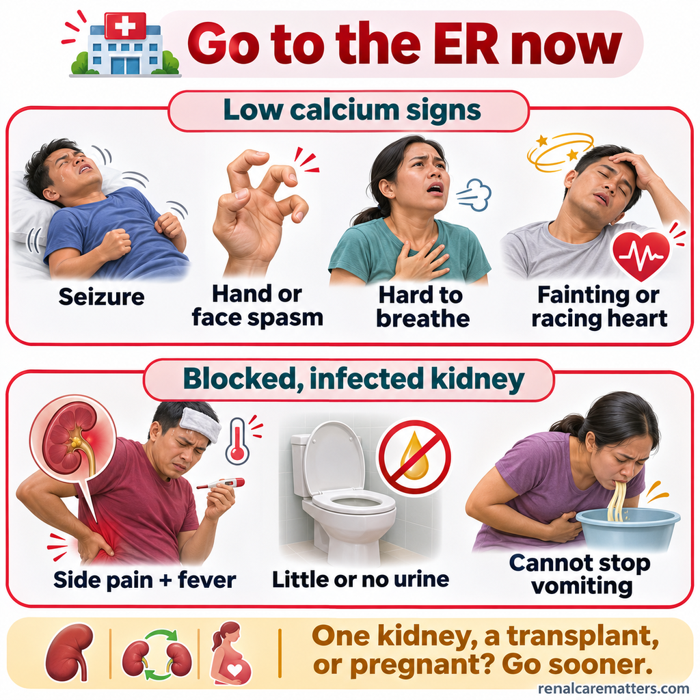
Go to the emergency room now for any of these: a seizure, spasm of the hands or face, trouble breathing, fainting or a racing heart, side pain with fever, little or no urine, or vomiting you cannot stop.Pumunta agad sa emergency room kung may alinman dito: kombulsyon, pulikat ng kamay o mukha, hirap huminga, pagkahimatay o mabilis na tibok ng puso, sakit sa tagiliran na may lagnat, kaunti o walang ihi, o pagsusukang hindi mapigil.Adto dayon sa emergency room kung adunay bisan usa niini: kombulsyon, pamikog sa kamot o nawong, lisod moginhawa, pagkaluya o paspas nga pitik sa kasingkasing, sakit sa kilid nga adunay hilanat, gamay o walay ihi, o pagsuka nga dili mapugngan.Munta ka agad king emergency room nung atin kang metung kareti: kumbulsyon, pulikat ning gamat o lupa, mirap king pangisnawa, pamagkahimatay o masikan a pamitik ning pusu, sakit king tagiliran a atin lagnat, kaunti o alang ili, o pamagmulua a e mapigilan.
- ER
- Emergency room
Four words, one mineralApat na salita, iisang mineralUpat ka pulong, usa ka mineralApat a amanu, metung a mineral
Your doctor may use four long words that all involve calcium. They sound alike, but they describe different things, and they often need different tests. Tap the one that brought you here.Maaaring gumamit ang doktor mo ng apat na mahahabang salita na lahat ay tungkol sa calcium. Magkakatunog ang mga ito, pero magkakaiba ang inilalarawan, at madalas ay iba-iba ang kailangang test. Pindutin ang salitang nagdala sa iyo rito.Mahimong mogamit ang imong doktor og upat ka tag-as nga pulong nga tanan mahitungod sa calcium. Managsama ang tingog niini, apan lahi-lahi ang gihulagway, ug kasagaran lahi-lahi ang gikinahanglang test. Pindota ang pulong nga nagdala kanimo dinhi.Malyaring gamitan ning doktor mu ing apat a malagwang amanu a sablang tungkul king calcium. Magkatunog la, oneng magkaiba ing ilalarawan da, at kalambang aliwa-aliwa ing kailangan a test. Pindutan me ing amanu a mika-dala keka keni.
HypocalcemiaHypocalcemiaHypocalcemiaHypocalcemia
Too little calcium in the blood. Can cause tingling, cramps and, when severe, seizures.Kulang ang calcium sa dugo. Puwedeng magdulot ng pangingilig, pulikat, at kung malala, kombulsyon.Kulang ang calcium sa dugo. Mahimong hinungdan sa pangatol, pamikog, ug kung grabe, kombulsyon.Kulang ya ing calcium king daya. Malyaring manyabi pamangilu, pulikat, at nung malala, kumbulsyon.
HypercalciuriaHypercalciuriaHypercalciuriaHypercalciuria
Too much calcium leaving in the urine. Usually silent; raises the chance of stones.Sobrang calcium na lumalabas sa ihi. Karaniwang walang sintomas; nagpapataas ng tsansa ng bato.Sobra nga calcium nga mogawas sa ihi. Kasagaran walay sintomas; nagpataas sa tsansa sa bato.Sobrang calcium a lumwal king ili. Kalambang alang sintomas; papakatas ne ing tsansa ning batu.
NephrocalcinosisNephrocalcinosisNephrocalcinosisNephrocalcinosis
Calcium specks deposited inside the kidney tissue itself, seen on a scan.Mga batik ng calcium na naipon sa loob mismo ng tisyu ng bato, nakikita sa scan.Mga tulbok sa calcium nga natipon sulod mismo sa tisyu sa kidney, makita sa scan.Batik-batik a calcium a mipun king lub mismu ning tisyu ning batu, akakit king scan.
Kidney stonesBato sa batoBato sa kidneyBatu king batu
Hard lumps that form in the urine channels. Most contain calcium; some are uric acid or other minerals.Matitigas na bukol na nabubuo sa daluyan ng ihi. Karamihan ay may calcium; ang ilan ay uric acid o ibang mineral.Gahi nga mga bukol nga maporma sa agianan sa ihi. Kadaghanan adunay calcium; ang uban uric acid o laing mineral.Matikas a bukol a mabibie king daluyan ning ili. Karamihan atin calcium; ing aliwa uric acid o aliwang mineral.
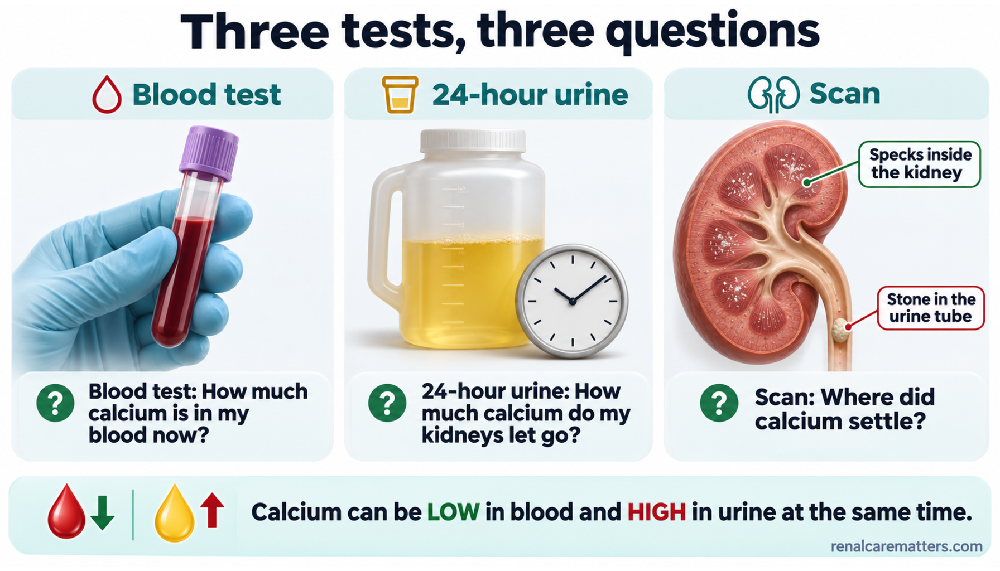
Three tests, three questions: the blood test shows how much calcium is circulating, the 24-hour urine shows how much the kidneys release, and the scan shows where calcium has settled, either inside kidney tissue (nephrocalcinosis) or as a stone in the urinary tract.Tatlong test, tatlong tanong: ipinapakita ng blood test kung gaano karaming calcium ang dumadaloy, ng 24-hour urine kung gaano karami ang inilalabas ng bato, at ng scan kung saan naipon ang calcium, sa loob ng tisyu ng bato (nephrocalcinosis) o bilang bato sa daluyan ng ihi.Tulo ka test, tulo ka pangutana: gipakita sa blood test kung pila ka calcium ang nag-agay, sa 24-hour urine kung pila ang gipagawas sa kidney, ug sa scan kung asa natipon ang calcium, sulod sa tisyu sa kidney (nephrocalcinosis) o ingon og bato sa agianan sa ihi.Atlung test, atlung kutang: ipakit ning blood test nung pilan a calcium ing dadaluyan, ning 24-hour urine nung pilan ing papalwalan ning batu, at ning scan nung nu ya mipun ing calcium, king lub ning tisyu ning batu (nephrocalcinosis) o antimong batu king daluyan ning ili.
- Ca
- Calcium
- PTH
- Parathyroid hormone
- CT
- Computed tomography
Doctors keep these apart because the same patient can have more than one. A woman whose parathyroid glands were injured during thyroid surgery, for example, can have low blood calcium, take calcium pills and active vitamin D to correct it, and end up with high urine calcium and calcium specks in her kidneys. Each test changes a different part of her plan.Pinaghihiwalay ito ng mga doktor dahil puwedeng higit sa isa ang mayroon ang iisang pasyente. Halimbawa, ang babaeng nasugatan ang parathyroid glands sa operasyon sa thyroid ay puwedeng bumaba ang calcium sa dugo, uminom ng calcium at active vitamin D para itama ito, at magkaroon ng mataas na calcium sa ihi at mga batik ng calcium sa bato. Iba-ibang bahagi ng plano niya ang binabago ng bawat test.Gibulag kini sa mga doktor kay mahimong labaw sa usa ang naa sa usa ka pasyente. Pananglitan, ang babaye nga naangol ang parathyroid glands sa operasyon sa thyroid mahimong mous-os ang calcium sa dugo, moinom og calcium ug active vitamin D aron itul-id kini, ug maadunay taas nga calcium sa ihi ug mga tulbok sa calcium sa kidney. Lahi-lahing bahin sa iyang plano ang usbon sa matag test.Pibukud-bukud da reti ding doktor uli ta malyaring mayigit king metung ing atyu king metung a pasyente. Halimbawa, ing babai a mesugatan ing parathyroid glands na king opera king thyroid malyaring mababa ya ing calcium na king daya, uminum calcium at active vitamin D ban itama ya, at mangatin matas a calcium king ili at batik-batik a calcium king batu na. Aliwa-aliwang bage ning plano na ing babaguan ning balang test.
When blood calcium runs lowKapag bumaba ang calcium sa dugoKung mous-os ang calcium sa dugoNung bumaba ing calcium king daya
Think of blood calcium as the voltage that keeps nerves and muscles steady. Your body guards it closely with three helpers: parathyroid hormone (PTH) from four tiny glands in the neck, activated vitamin D made by the kidneys, and magnesium, which the parathyroid glands need in order to work. When calcium dips, PTH rises within minutes: it pulls calcium from bone, tells the kidneys to hold on to calcium, and asks the kidneys to activate vitamin D so the gut absorbs more. If PTH is missing or cannot act, calcium falls and nerves become twitchy, which is why the first symptoms are tingling around the mouth and fingertips and cramping of the hands.Isipin ang calcium sa dugo bilang boltahe na nagpapatatag sa nerbiyos at kalamnan. Binabantayan ito ng katawan gamit ang tatlong katulong: ang parathyroid hormone (PTH) mula sa apat na maliliit na glandula sa leeg, ang activated vitamin D na ginagawa ng bato, at ang magnesium, na kailangan ng parathyroid glands para gumana. Kapag bumaba ang calcium, tumataas ang PTH sa loob ng ilang minuto: kumukuha ito ng calcium sa buto, sinasabihan ang bato na huwag itapon ang calcium, at pinapagawa ang bato ng activated vitamin D para mas maraming calcium ang masipsip ng bituka. Kung walang PTH o hindi ito gumagana, bumababa ang calcium at nagiging magalaw ang nerbiyos, kaya ang unang sintomas ay pangingilig sa paligid ng bibig at dulo ng daliri at pulikat ng kamay.Hunahunaa ang calcium sa dugo ingon nga boltahe nga nagpalig-on sa nerbiyos ug kaunoran. Gibantayan kini sa lawas pinaagi sa tulo ka katabang: ang parathyroid hormone (PTH) gikan sa upat ka gagmayng glandula sa liog, ang activated vitamin D nga gihimo sa kidney, ug ang magnesium, nga gikinahanglan sa parathyroid glands aron molihok. Kung mous-os ang calcium, mosaka ang PTH sulod sa pipila ka minuto: mokuha kini og calcium sa bukog, mosulti sa kidney nga dili ilabay ang calcium, ug mopahimo sa kidney og activated vitamin D aron mas daghang calcium ang masuyop sa tinai. Kung walay PTH o dili kini molihok, mous-os ang calcium ug mahimong sensitibo ang nerbiyos, mao nga ang unang sintomas mao ang pangatol libot sa baba ug tumoy sa tudlo ug pamikog sa kamot.Isipan me ing calcium king daya antimong boltahe a papatatag king nerbiyos at kalamnan. Babantayan ne ning katawan gamit ing atlung katulung: ing parathyroid hormone (PTH) manibat king apat a malating glandula king batal, ing activated vitamin D a gagawan ning batu, at ing magnesium, a kailangan dareng parathyroid glands ban gumana. Nung bumaba ing calcium, tumas ya ing PTH king lub da ning pilan a minutu: kukua yang calcium king butul, sasabyan na ing batu a e itapun ing calcium, at papagawan na ing batu activated vitamin D ban dakal a calcium ing masipsip ning bituka. Nung alang PTH o e ya gumagana, bumaba ing calcium at magi yang magalo ing nerbiyos, anya ing mumunang sintomas ing pamangilu king palibut ning asbuk at dulu ning taliri at pulikat ning gamat.
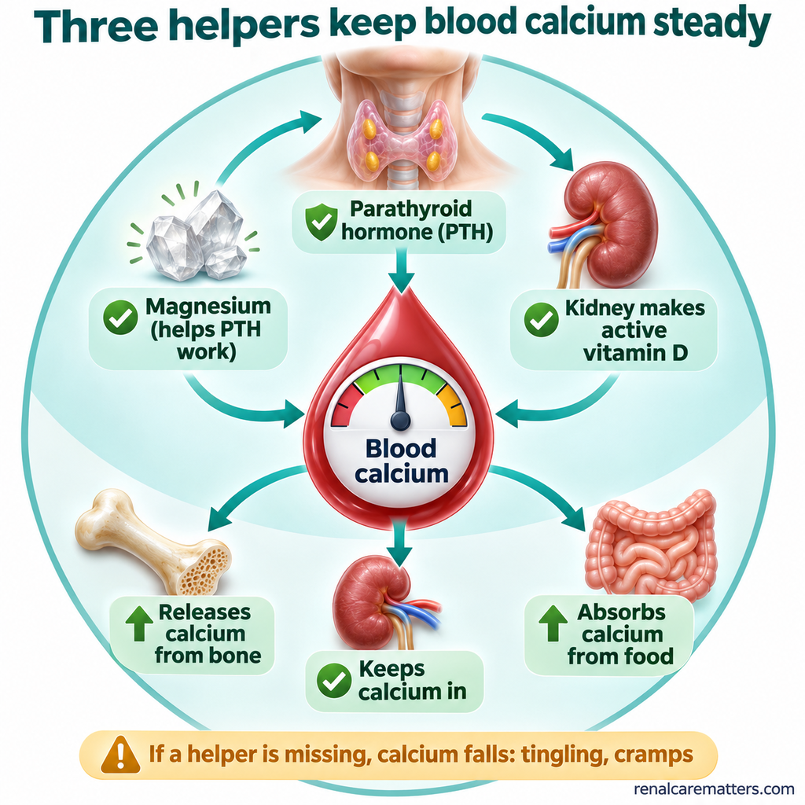
Three helpers keep blood calcium steady: parathyroid hormone from the neck glands, active vitamin D made by the kidney, and magnesium. Together they release calcium from bone, keep it in the kidney and absorb it from food. If one is missing, calcium falls.Tatlong katulong ang nagpapanatili ng calcium sa dugo: parathyroid hormone mula sa mga glandula sa leeg, active vitamin D na gawa ng bato, at magnesium. Sama-sama nilang kinukuha ang calcium sa buto, pinipigil itong maitapon ng bato, at sinisipsip ito mula sa pagkain. Kapag nawala ang isa, bumababa ang calcium.Tulo ka katabang ang nagpabilin sa calcium sa dugo: parathyroid hormone gikan sa mga glandula sa liog, active vitamin D nga gihimo sa kidney, ug magnesium. Dungan nilang gikuha ang calcium sa bukog, gipugngan nga ilabay sa kidney, ug gisuyop gikan sa pagkaon. Kung mawala ang usa, mous-os ang calcium.Atlung katulung ing papanatili king calcium king daya: parathyroid hormone manibat kareng glandula king batal, active vitamin D a gawa ning batu, at magnesium. Sabay dang kukuanan ing calcium king butul, pipigilan dang itapun ning batu, at sisipsipan da manibat king pamangan. Nung mawala ing metung, bumaba ing calcium.
- PTH
- Parathyroid hormone
| Common causesKaraniwang sanhiKasagarang hinungdanKaraniwan a sanhi | Why it happensBakit nangyayariNgano mahitaboNung bakit mayayaliwa |
|---|---|
| Neck surgery (thyroid or parathyroid)Operasyon sa leeg (thyroid o parathyroid)Operasyon sa liog (thyroid o parathyroid)Opera king batal (thyroid o parathyroid) | The parathyroid glands are bruised or removed; often temporary, sometimes lifelongNasugatan o natanggal ang parathyroid glands; madalas pansamantala, minsan panghabambuhayNaangol o natangtang ang parathyroid glands; kasagaran temporaryo, usahay hangtod sa kinabuhiMesugatan o mekua ing parathyroid glands; kalambang pansamantala, nung kapilan pang-bie |
| Low magnesiumMababang magnesiumUbos nga magnesiumMababang magnesium | The glands cannot release PTH without magnesium; common with diarrhea, alcohol, some water pills and acid-reducing pillsHindi makapaglabas ng PTH ang glands kung walang magnesium; karaniwan sa pagtatae, alak, ilang pampaihi at pampababa ng asidoDili makapagawas og PTH ang glands kung walay magnesium; kasagaran sa pagkalibang, alak, pipila ka pampaihi ug pampaubos sa asidoE makapagpalwal PTH ing glands nung alang magnesium; karaniwan king pamaglanu, alak, pilan a pampa-ili at pampababa asidu |
| Low vitamin D or poor absorptionMababang vitamin D o mahinang pagsipsipUbos nga vitamin D o huyang nga pagsuyopMababang vitamin D o mayna a pamanyipsip | Less calcium absorbed from food; seen after weight-loss surgery and in bowel diseaseMas kaunting calcium ang nasisipsip sa pagkain; nakikita pagkatapos ng operasyon para pumayat at sa sakit sa bitukaMas gamay nga calcium ang masuyop gikan sa pagkaon; makita human sa operasyon aron mogamay ug sa sakit sa tinaiMas kaunting calcium ing masipsip manibat king pamangan; akakit kaibat ning opera ban mamalate at king sakit king bituka |
| Advanced kidney diseaseMalubhang sakit sa batoGrabe nga sakit sa kidneyMalalang sakit king batu | The kidneys make less activated vitamin D and hold on to phosphateMas kaunti ang activated vitamin D na nagagawa ng bato at naiipon ang phosphateMas gamay ang activated vitamin D nga mahimo sa kidney ug matipon ang phosphateMas kaunti ing activated vitamin D a agawa ning batu at mipun ing phosphate |
| Some bone injections and medicinesIlang iniksiyon sa buto at gamotPipila ka indyeksiyon sa bukog ug tambalPilan a iniksiyon king butul at gamut | Denosumab, used for osteoporosis, can drop calcium sharply in people on dialysis; tell your team before any doseAng denosumab, na para sa osteoporosis, ay puwedeng magpababa nang husto ng calcium sa nagda-dialysis; sabihin sa team bago ang anumang dosisAng denosumab, alang sa osteoporosis, mahimong mopaubos pag-ayo sa calcium sa nagpa-dialysis; ingna ang team sa dili pa ang bisan unsang dosisIng denosumab, para king osteoporosis, malyaring pababan ne makasakit ing calcium kareng mag-dialysis; sabyan me ing team bayu ning anumang dosis |
A low calcium result is not always real. About half of the calcium in blood rides on a protein called albumin, so a person who is ill or poorly nourished can show a low total calcium while the active, free (ionized) calcium is normal. When the number will change treatment, your doctor may order an ionized calcium test, which measures the active part directly.Hindi laging totoo ang mababang resulta ng calcium. Halos kalahati ng calcium sa dugo ay nakasakay sa protinang albumin, kaya ang taong may sakit o kulang sa nutrisyon ay puwedeng magpakita ng mababang total calcium habang normal ang aktibo at malayang (ionized) calcium. Kapag magbabago ang gamutan dahil sa numero, maaaring ipa-test ng doktor ang ionized calcium, na direktang sumusukat sa aktibong bahagi.Dili kanunay tinuod ang ubos nga resulta sa calcium. Hapit katunga sa calcium sa dugo nagsakay sa protina nga albumin, mao nga ang tawo nga masakiton o kulang sa nutrisyon mahimong magpakita og ubos nga total calcium samtang normal ang aktibo ug gawasnong (ionized) calcium. Kung mausab ang pagtambal tungod sa numero, mahimong ipa-test sa doktor ang ionized calcium, nga direktang mosukod sa aktibong bahin.E pane tutu ing mababang resulta ning calcium. Malapit kapitna ning calcium king daya makasakay king protina a albumin, anya ing tau a masakit o kulang king nutrisyon malyaring magpakit mababang total calcium kabang normal ya ing aktibu at malayang (ionized) calcium. Nung mababago ing panulu uli ning numeru, malyaring ipa-test ning doktor ing ionized calcium, a direktang susukad king aktibung bage.
Why calcium can pour into the urineBakit bumubuhos ang calcium sa ihiNgano nga mobuhos ang calcium sa ihiNung bakit bubuhus ing calcium king ili
Every day your kidneys filter about ten times more calcium than you eat, then reabsorb almost all of it. High urine calcium (hypercalciuria) means this recovery system is letting more slip through. It does not cause symptoms by itself; it matters because concentrated, calcium-rich urine forms crystals more easily, and crystals grow into stones or settle in kidney tissue.Araw-araw, sinasala ng bato ang calcium na halos sampung beses na mas marami kaysa kinakain mo, saka sinisipsip muli halos lahat. Ang mataas na calcium sa ihi (hypercalciuria) ay nangangahulugang mas maraming nakakalusot sa sistemang ito. Wala itong sintomas mismo; mahalaga ito dahil ang malapot at mayaman sa calcium na ihi ay mas madaling magkaroon ng kristal, at lumalaki ang kristal at nagiging bato o naiipon sa tisyu ng bato.Matag adlaw, gisala sa kidney ang calcium nga hapit napulo ka pilo nga mas daghan kaysa imong gikaon, unya gisuyop pag-usab hapit tanan. Ang taas nga calcium sa ihi (hypercalciuria) nagpasabot nga mas daghan ang makalusot niini nga sistema. Walay sintomas kini mismo; importante kini kay ang lapot ug dato sa calcium nga ihi mas dali nga maporma og kristal, ug modako ang kristal ug mahimong bato o matipon sa tisyu sa kidney.Aldo-aldo, sasalan ning batu ing calcium a malapit apulung beses a mas dakal kesa king pamangan mu, at sisipsipan na pasibayu ing malapit sablang. Ing matas a calcium king ili (hypercalciuria) kayabe na a mas dakal ing makalusut king sistema a iti. Alang sintomas ya mismu; mahalaga ya uli ta ing malapot at mayaman king calcium a ili mas masikan magkatin kristal, at durakal ing kristal at magi yang batu o mipun king tisyu ning batu.
Common drivers are a salty diet (sodium pulls calcium out with it in the kidney), large amounts of animal protein, an overactive parathyroid gland, too much active vitamin D or calcium from pills, some inherited kidney conditions, and medicines such as loop water pills. In people who were born with a calcium-sensing switch set too sensitively, the kidney dumps calcium even when blood calcium is low.Karaniwang sanhi ang maalat na pagkain (hinihila ng sodium ang calcium palabas sa bato), maraming protina mula sa hayop, sobrang aktibong parathyroid gland, sobrang active vitamin D o calcium mula sa tableta, ilang namamanang kondisyon sa bato, at mga gamot gaya ng loop na pampaihi. Sa mga ipinanganak na sobrang sensitibo ang 'switch' na nakakaramdam ng calcium, itinatapon ng bato ang calcium kahit mababa ang calcium sa dugo.Kasagarang hinungdan ang parat nga pagkaon (ginabira sa sodium ang calcium pagawas sa kidney), daghang protina gikan sa hayop, sobrang aktibo nga parathyroid gland, sobra nga active vitamin D o calcium gikan sa tableta, pipila ka napanunod nga kondisyon sa kidney, ug mga tambal sama sa loop nga pampaihi. Sa mga natawo nga sobra ka sensitibo ang 'switch' nga mobati sa calcium, ilabay sa kidney ang calcium bisan ubos ang calcium sa dugo.Karaniwan a sanhi ing maalat a pamangan (gugulutan ning sodium ing calcium palwal king batu), dakal a protina manibat king ayup, sobrang aktibung parathyroid gland, sobrang active vitamin D o calcium manibat king tableta, pilan a minana a kundisyun king batu, at gamut antimo ing loop a pampa-ili. Kareng mibait a sobrang sensitibu ing 'switch' a maramdam king calcium, itatapun ning batu ing calcium agyang mababa ya ing calcium king daya.
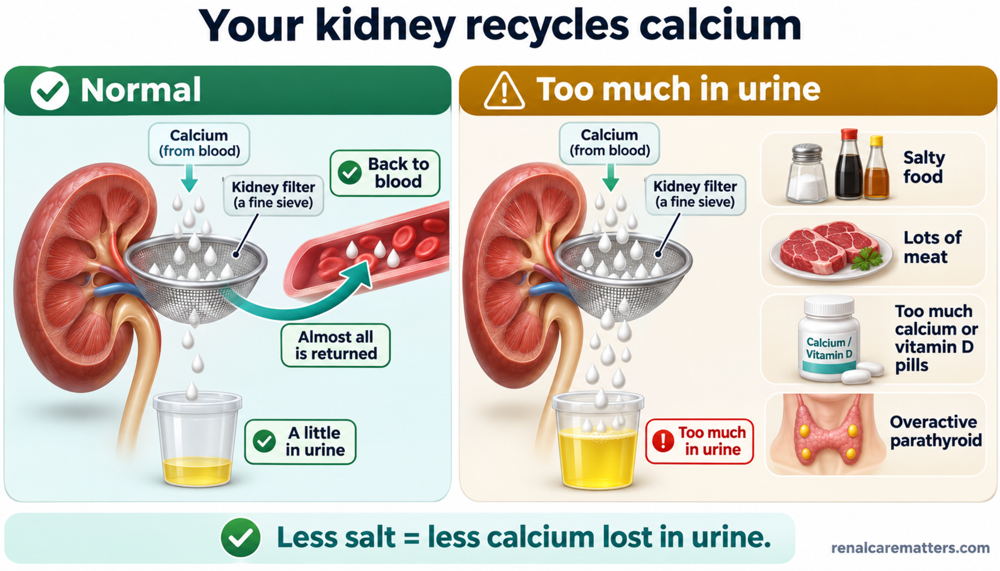
Your kidney works like a recycling sieve: it filters calcium and returns almost all of it to the blood. Salty food, lots of meat, too many calcium or vitamin D pills, or an overactive parathyroid let more calcium spill into the urine.Ang bato mo ay parang salaang nagre-recycle: sinasala nito ang calcium at ibinabalik ang halos lahat sa dugo. Ang maalat na pagkain, maraming karne, sobrang calcium o vitamin D na tableta, o sobrang aktibong parathyroid ay nagpapalabas ng mas maraming calcium sa ihi.Ang imong kidney sama sa salaan nga nag-recycle: gisala niini ang calcium ug gibalik ang hapit tanan sa dugo. Ang parat nga pagkaon, daghang karne, sobra nga calcium o vitamin D nga tableta, o sobrang aktibo nga parathyroid mopagawas og mas daghang calcium sa ihi.Ing batu mu antimo yang salaan a magre-recycle: sasalan ne ing calcium at ibabalik ne ing malapit sablang king daya. Ing maalat a pamangan, dakal a karni, sobrang calcium o vitamin D a tableta, o sobrang aktibung parathyroid papalwalan da ing mas dakal a calcium king ili.
Myth: "Stop drinking milk and eating calcium if you have stones."Maling akala: "Itigil ang gatas at calcium kung may bato."Sayop nga tuo: "Hunonga ang gatas ug calcium kung adunay bato."Maling akala: "Ipaurung ing gatas at calcium nung atin kang batu."
This backfires. Calcium eaten with a meal binds oxalate in the gut so less oxalate reaches the urine. In a five-year randomized trial in men with calcium oxalate stones and high urine calcium, a normal-calcium diet with less salt and less animal protein cut stone recurrence roughly in half compared with a low-calcium diet. Low-calcium diets also weaken bone. The exception is extra calcium pills, which your doctor may adjust.Bumabalik ito sa iyo. Ang calcium na kinain kasabay ng pagkain ay kumakapit sa oxalate sa bituka kaya mas kaunting oxalate ang umaabot sa ihi. Sa isang limang-taong randomized trial sa mga lalaking may calcium oxalate stones at mataas na calcium sa ihi, ang normal-calcium na diyeta na mas kaunti ang asin at protina mula sa hayop ay halos humati sa pagbalik ng bato kumpara sa low-calcium na diyeta. Pinapahina rin ng low-calcium na diyeta ang buto. Ang eksepsiyon ay ang dagdag na calcium na tableta, na maaaring ayusin ng doktor.Mobalik kini kanimo. Ang calcium nga gikaon kauban sa pagkaon mokupot sa oxalate sa tinai mao nga mas gamay nga oxalate ang moabot sa ihi. Sa usa ka lima ka tuig nga randomized trial sa mga lalaki nga adunay calcium oxalate stones ug taas nga calcium sa ihi, ang normal-calcium nga diyeta nga gamay ang asin ug protina gikan sa hayop hapit mitunga sa pagbalik sa bato kon itandi sa low-calcium nga diyeta. Pahuyangon usab sa low-calcium nga diyeta ang bukog. Ang eksepsiyon mao ang dugang nga calcium nga tableta, nga mahimong usbon sa doktor.Bumalik ya keka. Ing calcium a pengan kayabe ning pamangan kakapit ya king oxalate king bituka anya mas kaunting oxalate ing dumatang king ili. King metung a limang banwang randomized trial kareng lalaking atin calcium oxalate stones at matas a calcium king ili, ing normal-calcium a diyeta a mas kaunti ing asin at protina manibat king ayup malapit menikapitna king pamagbalik ning batu nung ikumpara king low-calcium a diyeta. Pinapayna mu rin ning low-calcium a diyeta ing butul. Ing eksepsiyon ing dagdag a calcium a tableta, a malyaring ayusan ning doktor.
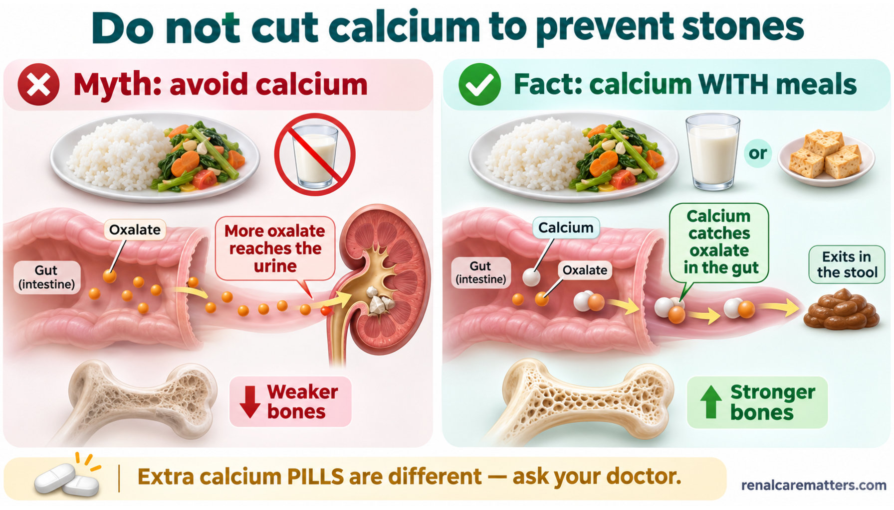
Cutting calcium backfires: without calcium in the gut, more oxalate reaches the urine and bones weaken. Calcium eaten with meals catches oxalate in the gut so it leaves in the stool. Extra calcium pills are different; ask your doctor.Bumabalik sa iyo ang pagbawas ng calcium: kapag walang calcium sa bituka, mas maraming oxalate ang umaabot sa ihi at humihina ang buto. Ang calcium na kinain kasabay ng pagkain ay humuhuli sa oxalate sa bituka kaya lumalabas ito sa dumi. Iba ang dagdag na calcium na tableta; magtanong sa doktor.Mobalik kanimo ang pagkunhod sa calcium: kung walay calcium sa tinai, mas daghang oxalate ang moabot sa ihi ug mohuyang ang bukog. Ang calcium nga gikaon kauban sa pagkaon modakop sa oxalate sa tinai aron mogawas kini sa tai. Lahi ang dugang nga calcium nga tableta; pangutana sa doktor.Bumalik ya keka ing pamagbawas calcium: nung alang calcium king bituka, mas dakal a oxalate ing dumatang king ili at mayna la ring butul. Ing calcium a pengan kayabe ning pamangan dadakpan ne ing oxalate king bituka anya lumwal ya king tai. Aliwa ya ing dagdag a calcium a tableta; kutang ka king doktor.
Calcium in the kidney tissue, or a stone in the pipesCalcium sa tisyu ng bato, o bato sa daluyanCalcium sa tisyu sa kidney, o bato sa agiananCalcium king tisyu ning batu, o batu king daluyan
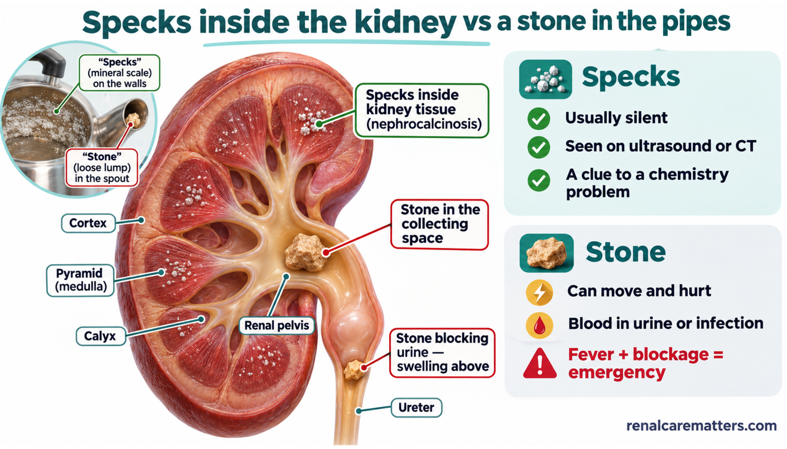
Nephrocalcinosis is a dusting of calcium inside the kidney tissue, usually in the inner pyramids. A stone is a separate lump that forms in the collecting system and can travel down the ureter, where it may block urine flow and cause pain. The two can happen together.Ang nephrocalcinosis ay pagkakalat ng calcium sa loob ng tisyu ng bato, kadalasan sa mga pyramid sa loob. Ang bato ay hiwalay na bukol na nabubuo kung saan naiipon ang ihi at puwedeng bumaba sa ureter, kung saan maaari nitong barahan ang ihi at magdulot ng sakit. Puwedeng magsabay ang dalawa.Ang nephrocalcinosis mao ang pagkatag sa calcium sulod sa tisyu sa kidney, kasagaran sa mga pyramid sa sulod. Ang bato usa ka bulag nga bukol nga maporma diin matipon ang ihi ug mahimong moubos sa ureter, diin mahimo nini nga babagan ang ihi ug hinungdan sa sakit. Mahimong magdungan ang duha.Ing nephrocalcinosis ing pamagkalat ning calcium king lub ning tisyu ning batu, kalambang kareng pyramid king lub. Ing batu metung yang bukud a bukol a mabibie nung nu ya mipun ing ili at malyaring mumulus king ureter, nung nu ne malyaring barahan ing ili at manyabi sakit. Malyaring magsabay ing adwa.
- US
- Ultrasound
- CT
- Computed tomography
A kidney stone is like scale in a kettle that forms in the space where urine collects, then breaks loose and travels. Nephrocalcinosis is different: the calcium is laid down within the kidney's working tissue, more like mineral seeping into the walls of the kettle. Stones announce themselves with pain, blood in the urine or infection when they move. Nephrocalcinosis is usually silent and is found on an ultrasound or computed tomography (CT) scan done for another reason, but it is a clue that something, often in the blood chemistry or in how the kidney tubules handle acid and minerals, needs to be found and treated.Ang bato sa bato ay parang kaliskis sa takure na nabubuo kung saan naiipon ang ihi, saka natatanggal at bumibiyahe. Iba ang nephrocalcinosis: ang calcium ay nailalatag sa loob ng gumaganang tisyu ng bato, parang mineral na tumatagos sa pader ng takure. Nagpaparamdam ang bato sa pamamagitan ng sakit, dugo sa ihi o impeksiyon kapag gumalaw ito. Karaniwang tahimik ang nephrocalcinosis at natutuklasan sa ultrasound o computed tomography (CT) scan na ginawa para sa ibang dahilan, pero palatandaan ito na may kailangang hanapin at gamutin, kadalasan sa kemistri ng dugo o sa paraan ng paghawak ng tubules ng bato sa asido at mineral.Ang bato sa kidney sama sa kaliskis sa takure nga maporma diin matipon ang ihi, unya matangtang ug mobiyahe. Lahi ang nephrocalcinosis: ang calcium mapahimutang sulod sa naglihok nga tisyu sa kidney, sama sa mineral nga mosulod sa bungbong sa takure. Mopabati ang bato pinaagi sa sakit, dugo sa ihi o impeksiyon kung molihok kini. Kasagaran hilom ang nephrocalcinosis ug makit-an sa ultrasound o computed tomography (CT) scan nga gihimo tungod sa laing rason, apan timailhan kini nga adunay kinahanglang pangitaon ug tambalan, kasagaran sa kemistri sa dugo o sa paagi sa pagdumala sa tubules sa kidney sa asido ug mineral.Ing batu king batu antimo yang kaliskis king takuri a mabibie nung nu ya mipun ing ili, at mekakalas ya at bumyahe. Aliwa ya ing nephrocalcinosis: ing calcium makalatag king lub ning gagana a tisyu ning batu, antimong mineral a tutubu king pader ning takuri. Pakiramdaman ne ning batu king sakit, daya king ili o impeksiyon nung gumalo ya. Kalambang tahimik ya ing nephrocalcinosis at akikit ya king ultrasound o computed tomography (CT) scan a megawa para king aliwang dahilan, oneng tanda ya a atin kailangan panintunan at panulunan, kalambang king kemistri ning daya o king paralan na ning tubules ning batu king asidu at mineral.
Many common stones start small. A typical calcium oxalate stone often begins on a tiny patch of calcium at the tip of the kidney's inner pyramids, called Randall plaque, much like a barnacle that settles on a rock and then grows. People who lose more calcium in their urine and pass less urine tend to have more of these patches, which is one more reason the prevention plan focuses on salt, fluids and urine calcium.Maraming karaniwang bato ang nagsisimula sa maliit. Ang karaniwang calcium oxalate stone ay madalas nagsisimula sa isang maliit na patse ng calcium sa dulo ng mga pyramid sa loob ng bato, na tinatawag na Randall plaque, parang taliptip (barnacle) na kumakapit sa bato sa dagat at saka lumalaki. Ang mga taong mas maraming calcium na nawawala sa ihi at mas kaunti ang ihi ay kadalasang mas marami ang ganitong patse, kaya isa pa itong dahilan kung bakit nakatuon ang plano ng pag-iwas sa asin, inumin at calcium sa ihi.Daghang kasagarang bato ang nagsugod sa gamay. Ang kasagarang calcium oxalate stone kanunay magsugod sa usa ka gamay nga patsi sa calcium sa tumoy sa mga pyramid sulod sa kidney, nga gitawag og Randall plaque, sama sa sisi (barnacle) nga mokupot sa bato sa dagat ug unya modako. Ang mga tawo nga mas daghang calcium ang mawala sa ihi ug mas gamay ang ihi kasagaran mas daghan niini nga patsi, busa usa pa kini ka rason nga ang plano sa paglikay nagtutok sa asin, ilimnon ug calcium sa ihi.Dakal a karaniwan a batu ing mumpisa a malati. Ing karaniwan a calcium oxalate stone kalambang mumpisa king metung a malating patse a calcium king dulu dareng pyramid king lub ning batu, a aus dang Randall plaque, antimong barnacle (taliptip) a kakapit king batu king dagat at kaibat durakal. Ding tau a mas dakal a calcium ing mawawala king ili at mas kaunti ing ili kalambang mas dakal la reting patse, anya metung ya pang dahilan nung bakit ing planu ning pamanyalikwas makatuntun king asin, inumin at calcium king ili.
The tests, and how to collect a 24-hour urineAng mga test, at kung paano mangolekta ng 24-hour urineAng mga test, ug unsaon pagkolekta sa 24-hour urineDing test, at nung makananu mangolekta 24-hour urine
Your doctor chooses tests based on which of the four problems you have. For low calcium, expect blood calcium (sometimes ionized calcium), PTH, magnesium, phosphate, creatinine and vitamin D, drawn together so they can be read side by side. For stones, expect a urinalysis, blood chemistry, analysis of any stone you pass, and, if you have had more than one stone or other risk features, one or two 24-hour urine collections.Pinipili ng doktor ang test batay sa kung alin sa apat na problema ang mayroon ka. Para sa mababang calcium, asahan ang blood calcium (minsan ionized calcium), PTH, magnesium, phosphate, creatinine at vitamin D, kinukuha nang sabay para mabasa nang magkatabi. Para sa bato, asahan ang urinalysis, blood chemistry, pagsusuri sa batong lumabas, at kung higit sa isa na ang bato mo o may iba pang panganib, isa o dalawang 24-hour urine collection.Pilion sa doktor ang test base sa kung hain sa upat ka problema ang naa nimo. Para sa ubos nga calcium, paabota ang blood calcium (usahay ionized calcium), PTH, magnesium, phosphate, creatinine ug vitamin D, kuhaon dungan aron mabasa nga magtupad. Para sa bato, paabota ang urinalysis, blood chemistry, pagsusi sa bato nga migawas, ug kung labaw na sa usa ang imong bato o adunay laing peligro, usa o duha ka 24-hour urine collection.Pipili ning doktor ing test batay nung nanu king apat a problema ing atyu keka. Para king mababang calcium, asan ing blood calcium (nung kapilan ionized calcium), PTH, magnesium, phosphate, creatinine at vitamin D, kukuanan sabay ban mabasa a magsiping. Para king batu, asan ing urinalysis, blood chemistry, pamanyuri king batung lumwal, at nung mayigit na king metung ing batu mu o atin pang aliwang panganib, metung o adwang 24-hour urine collection.
Save any stone you passItago ang anumang batong lumabasTipigi ang bisan unsang bato nga migawasItagu ing anumang batung lumwal
Urinate through a strainer or a clean cloth, let the stone dry, and bring it in a small labeled container. Knowing whether it is calcium oxalate, calcium phosphate, uric acid, struvite or cystine changes the prevention plan.Umihi sa salaan o malinis na tela, patuyuin ang bato, at dalhin sa maliit na lalagyang may label. Nagbabago ang plano ng pag-iwas depende kung calcium oxalate, calcium phosphate, uric acid, struvite o cystine ito.Ihi sa salaan o limpyong panapton, pauga ang bato, ug dad-a sa gamay nga sudlanan nga adunay label. Mausab ang plano sa paglikay depende kung calcium oxalate, calcium phosphate, uric acid, struvite o cystine kini.Mamili ka king salaan o malinis a tela, patuyuan me ing batu, at darun me king malating lalagyan a atin label. Mababago ing plano ning pamanyalikwas depende nung calcium oxalate, calcium phosphate, uric acid, struvite o cystine ya.
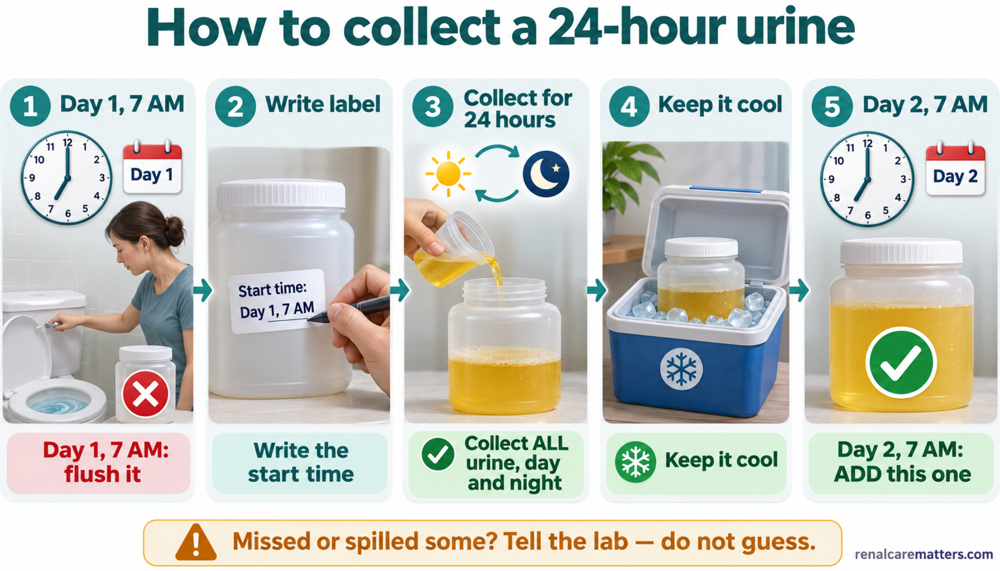
Five steps for a complete 24-hour urine: flush the first morning urine, write the start time, collect all urine day and night, keep it cool, and add the urine at the same time the next morning.Limang hakbang para sa kumpletong 24-hour urine: i-flush ang unang ihi sa umaga, isulat ang oras ng simula, kolektahin ang lahat ng ihi araw at gabi, panatilihing malamig, at idagdag ang ihi sa parehong oras kinabukasan ng umaga.Lima ka lakang para sa kompleto nga 24-hour urine: i-flush ang unang ihi sa buntag, isulat ang oras sa sugod, kolektaha ang tanang ihi adlaw ug gabii, itago nga bugnaw, ug idugang ang ihi sa parehas nga oras sa sunod buntag.Limang pamikat para king kumpletung 24-hour urine: i-flush me ing mumunang ili king abak, isulat me ing oras ning pamumpisa, kolektan me ing sablang ili aldo at bengi, panatilian a malamig, at idagdag me ing ili king pareung oras king kabukasan a abak.
- AM
- Morning (ante meridiem)
A stone-prevention plan that fits a Filipino kitchenPlanong pag-iwas sa bato na bagay sa kusinang PilipinoPlano sa paglikay sa bato nga haom sa kusinang PilipinoPlanu ning pamanyalikwas king batu a bagay king kusinang Pilipinu
Most stones contain calcium, and the most effective changes work on the urine itself: make it more dilute, lower its calcium and oxalate load, and keep the natural crystal blockers, such as citrate, high. Ask your doctor first if you have heart failure, are on dialysis, or have been told to limit fluids; your fluid goal must then be set for you.Karamihan ng bato ay may calcium, at ang pinakaepektibong pagbabago ay gumagana sa ihi mismo: palabnawin ito, bawasan ang calcium at oxalate, at panatilihing mataas ang natural na pangharang sa kristal gaya ng citrate. Magtanong muna sa doktor kung may heart failure ka, nagda-dialysis, o pinagbawalang uminom nang marami; dapat itakda para sa iyo ang layunin mo sa pag-inom.Kadaghanan sa bato adunay calcium, ug ang labing epektibo nga kausaban molihok sa ihi mismo: palabnawa kini, kunhuri ang calcium ug oxalate, ug ipadayon nga taas ang natural nga pangbabag sa kristal sama sa citrate. Pangutana una sa doktor kung adunay heart failure, nagpa-dialysis, o gidid-an sa pag-inom og daghan; kinahanglang itakda alang kanimo ang imong tumong sa pag-inom.Karamihan kareng batu atin calcium, at ing pekamaepektibung pamagbayu gagana king ili mismu: palabnawan ya, bawasan ing calcium at oxalate, at panatilian a matas ing natural a pangarang king kristal antimo ing citrate. Kutang ka pamu king doktor nung atin kang heart failure, mag-dialysis ka, o mipagbawal kang uminum a dakal; dapat itakda para keka ing layunin mu king pamanainum.
| HabitGawiBatasanUgali | What to doAno ang gagawinUnsay buhatonNanu ing gawan | Why it helpsBakit nakakatulongNgano makatabangNung bakit makatulung |
|---|---|---|
| FluidsInuminIlimnonInumin | If your doctor agrees, drink enough water, spread through the day, to pass about 2.5 liters of urine daily; pale-yellow urine is a rough guideKung payag ang doktor, uminom ng sapat na tubig sa buong araw para makaihi ng mga 2.5 litro araw-araw; ang maputlang dilaw na ihi ay magaspang na gabayKung mouyon ang doktor, inom og igo nga tubig sa tibuok adlaw aron makaihi og mga 2.5 litro matag adlaw; ang luspad nga dalag nga ihi usa ka gabayNung payag ing doktor, uminum kang sapat a danum king kabilugan ning aldo ban makaili kang 2.5 litru aldo-aldo; ing maputlang diláw a ili gabay | Dilute urine keeps minerals dissolvedPinapanatiling tunaw ng malabnaw na ihi ang mineralAng labnaw nga ihi magpabilin nga tunaw ang mineralIng malabnaw a ili panatilian na a tunaw ing mineral |
| Food calciumCalcium sa pagkainCalcium sa pagkaonCalcium king pamangan | Keep normal calcium from food, eaten with meals (milk, yogurt, cheese, small fish with bones, tokwa set with calcium)Panatilihin ang normal na calcium mula sa pagkain, kasabay ng kain (gatas, yogurt, keso, maliliit na isda na may tinik, tokwa na may calcium)Ipadayon ang normal nga calcium gikan sa pagkaon, kauban sa pagkaon (gatas, yogurt, keso, gagmayng isda nga adunay bukog, tokwa nga adunay calcium)Panatilian ing normal a calcium manibat king pamangan, kayabe ning pamangan (gatas, yogurt, keso, malating asan a atin sulagi, tokwa a atin calcium) | Binds oxalate in the gut; protects boneKumakapit sa oxalate sa bituka; pinoprotektahan ang butoMokupot sa oxalate sa tinai; manalipod sa bukogKakapit ya king oxalate king bituka; protektahan na ing butul |
| SaltAsinAsinAsin | Go easy on patis, toyo, bagoong, instant noodles, chichirya, canned and processed meats; read the sodium line on labelsBawasan ang patis, toyo, bagoong, instant noodles, chichirya, de-lata at processed na karne; basahin ang sodium sa labelKunhuri ang patis, toyo, ginamos, instant noodles, chichirya, de-lata ug processed nga karne; basaha ang sodium sa labelBawasan ing patis, toyo, bagoong, instant noodles, chichirya, de-lata at processed a karni; basan ing sodium king label | Less sodium means less calcium in urineMas kaunting sodium, mas kaunting calcium sa ihiMas gamay nga sodium, mas gamay nga calcium sa ihiMas kaunting sodium, mas kaunting calcium king ili |
| Animal proteinProtina mula sa hayopProtina gikan sa hayopProtina manibat king ayup | Keep portions moderate, especially large servings of meat, organ meats and sardines at one sittingPanatilihing katamtaman ang dami, lalo na ang malalaking serving ng karne, lamang-loob at sardinas sa isang upuanIpadayon nga kasarangan ang kadaghan, labi na ang dagkong serving sa karne, laman-loob ug sardinas sa usa ka lingkorananPanatilian a katamtaman ing dakal, lalu na ing maragul a serving a karni, lamang-lub at sardinas king metung a pamangan | Raises urine calcium and uric acid, lowers citratePinapataas ang calcium at uric acid sa ihi, pinapababa ang citrateMopataas sa calcium ug uric acid sa ihi, mopaubos sa citratePapatasan na ing calcium at uric acid king ili, pababan na ing citrate |
| Oxalate and vitamin COxalate at vitamin COxalate ug vitamin COxalate at vitamin C | If your urine oxalate is high, limit very concentrated sources (spinach, nuts, tea brewed strong) and avoid high-dose vitamin C supplementsKung mataas ang oxalate sa ihi mo, limitahan ang napakaraming pinagmumulan (spinach, mani, matapang na tsaa) at iwasan ang mataas na dosis ng vitamin C supplementKung taas ang oxalate sa imong ihi, limitahi ang dato kaayong gigikanan (spinach, mani, isog nga tsa) ug likayi ang taas nga dosis sa vitamin C supplementNung matas ing oxalate king ili mu, limitan ing mayaman a pagmulan (spinach, mani, matapang a tsa) at iwasan ing maragul a dosis a vitamin C supplement | Vitamin C turns partly into oxalateBahagyang nagiging oxalate ang vitamin CAng vitamin C bahin nga mahimong oxalateBahagyang magi yang oxalate ing vitamin C |
| Sweet drinksMatatamis na inuminTam-is nga ilimnonMatamis a inumin | Limit soft drinks and sugary juices; plain water is bestLimitahan ang softdrinks at matatamis na juice; pinakamainam ang tubigLimitahi ang softdrinks ug tam-is nga juice; labing maayo ang tubigLimitan ing softdrinks at matamis a juice; pekamasanting ing danum | Sugar raises urine calciumPinapataas ng asukal ang calcium sa ihiAng asukal mopataas sa calcium sa ihiPapatasan ning asukal ing calcium king ili |
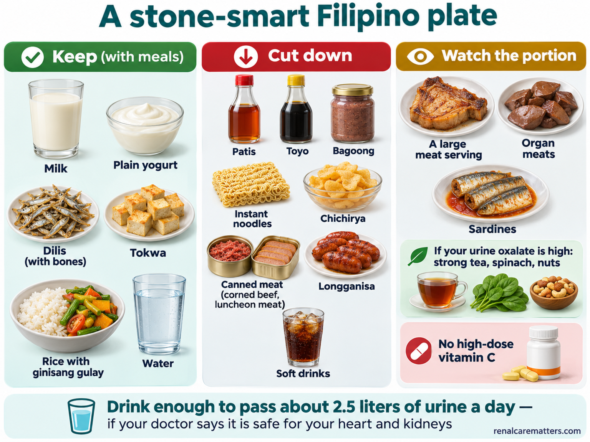
A stone-smart Filipino plate: keep milk, yogurt, small fish with bones, tokwa and water with meals; cut down patis, toyo, bagoong, instant noodles, processed meats and soft drinks; watch large meat portions and skip high-dose vitamin C.Plato na pang-iwas sa bato: panatilihin ang gatas, yogurt, maliliit na isda na may tinik, tokwa at tubig kasabay ng kain; bawasan ang patis, toyo, bagoong, instant noodles, processed na karne at softdrinks; bantayan ang malalaking serving ng karne at iwasan ang mataas na dosis ng vitamin C.Plato nga panglikay sa bato: ipadayon ang gatas, yogurt, gagmayng isda nga adunay bukog, tokwa ug tubig kauban sa pagkaon; kunhuri ang patis, toyo, ginamos, instant noodles, processed nga karne ug softdrinks; bantayi ang dagkong serving sa karne ug likayi ang taas nga dosis sa vitamin C.Plato a pamanyalikwas king batu: panatilian ing gatas, yogurt, malating asan a atin sulagi, tokwa at danum kayabe ning pamangan; bawasan ing patis, toyo, bagoong, instant noodles, processed a karni at softdrinks; bantayan ing maragul a serving a karni at iwasan ing maragul a dosis a vitamin C.
A large 2026 randomized trial gave people coaching, reminders and small rewards to drink more. Their urine output rose, but the number of painful stone episodes did not fall over two years compared with usual care. Drinking more is still recommended; the trial shows that the goal is to actually pass more urine, every day, which is why measuring it occasionally is more useful than counting glasses.Sa isang malaking randomized trial noong 2026, binigyan ang mga tao ng coaching, paalala at maliliit na gantimpala para uminom nang mas marami. Tumaas ang dami ng kanilang ihi, pero hindi bumaba ang bilang ng masasakit na atake ng bato sa loob ng dalawang taon kumpara sa karaniwang alaga. Inirerekomenda pa rin ang mas maraming inom; ipinapakita ng trial na ang layunin ay talagang makaihi nang mas marami araw-araw, kaya mas kapaki-pakinabang ang paminsan-minsang pagsukat nito kaysa pagbibilang ng baso.Sa usa ka dako nga randomized trial niadtong 2026, gihatagan ang mga tawo og coaching, pahinumdom ug gagmayng ganti aron moinom og mas daghan. Misaka ang gidaghanon sa ilang ihi, apan wala mous-os ang ihap sa masakit nga atake sa bato sulod sa duha ka tuig kon itandi sa naandang pag-atiman. Girekomenda gihapon ang mas daghang pag-inom; gipakita sa trial nga ang tumong mao ang tinuod nga makaihi og mas daghan matag adlaw, mao nga mas mapuslanon ang panagsa nga pagsukod niini kaysa pag-ihap sa baso.King metung a maragul a randomized trial anyang 2026, binyan dala ding tau coaching, paalala at malating gantimpala ban uminum a mas dakal. Timas ing dakal ning ili ra, oneng e mebawasan ing bilang ning masakit a atake ning batu king lub ning adwang banwa nung ikumpara king karaniwan a alaga. Irekomenda pa rin ing mas dakal a pamanainum; ipakit ning trial a ing layunin ing tutung makaili a mas dakal aldo-aldo, anya mas makatulung ing pamanukad kesa king pamilang baso.
Medicines your doctor may discussMga gamot na maaaring pag-usapan ng doktorMga tambal nga mahimong hisgutan sa doktorGamut a malyaring pag-usapan ning doktor
No single medicine suits everyone. The choice depends on the stone type and what your blood and urine tests show. Never start, stop or change calcium, vitamin D or water pills on your own, because a change that helps one test can harm another.Walang iisang gamot na bagay sa lahat. Nakadepende ang pagpili sa uri ng bato at sa resulta ng blood at urine test mo. Huwag kailanman magsimula, tumigil o magbago ng calcium, vitamin D o pampaihi nang mag-isa, dahil ang pagbabagong nakakatulong sa isang test ay puwedeng makasama sa iba.Walay usa ka tambal nga haom sa tanan. Nagdepende ang pagpili sa klase sa bato ug sa resulta sa imong blood ug urine test. Ayaw gyud pagsugod, paghunong o pag-usab sa calcium, vitamin D o pampaihi nga ikaw ra, kay ang kausaban nga makatabang sa usa ka test mahimong makadaot sa lain.Alang metung a gamut a bagay king sablang. Makadepende ing pamili king klase ning batu at king resulta ning blood at urine test mu. E ka kailanman mumpisa, mamaurung o magbayu calcium, vitamin D o pampa-ili a ika mu, uli ta ing pamagbayu a makatulung king metung a test malyaring makasakit king aliwa.
| MedicineGamotTambalGamut | Used forPara saanAlang sa unsaPara nanu | What to watchAno ang bantayanUnsay bantayanNanu ing bantayan |
|---|---|---|
| Thiazide-type water pill (hydrochlorothiazide, chlorthalidone, indapamide)Thiazide na pampaihi (hydrochlorothiazide, chlorthalidone, indapamide)Thiazide nga pampaihi (hydrochlorothiazide, chlorthalidone, indapamide)Thiazide a pampa-ili (hydrochlorothiazide, chlorthalidone, indapamide) | Lowers urine calcium in repeat calcium stone formers or treated low parathyroid functionPinapababa ang calcium sa ihi sa paulit-ulit na may calcium stone o ginagamot na mahinang parathyroidMopaubos sa calcium sa ihi sa balik-balik nga adunay calcium stone o gitambalan nga huyang nga parathyroidPababan na ing calcium king ili kareng paulit-ulit a atin calcium stone o panulunan a mayna a parathyroid | Low potassium or sodium, gout, sugar, dizziness; blood tests after startingMababang potassium o sodium, gout, asukal, hilo; blood test pagkasimulaUbos nga potassium o sodium, gout, asukal, pagkalipong; blood test human magsugodMababang potassium o sodium, gout, asukal, pamagkalinu; blood test kaibat mumpisa |
| Potassium citratePotassium citratePotassium citratePotassium citrate | Raises citrate and urine pH; for low citrate, uric acid stones, some acid-handling disordersPinapataas ang citrate at pH ng ihi; para sa mababang citrate, uric acid stones, ilang problema sa asidoMopataas sa citrate ug pH sa ihi; alang sa ubos nga citrate, uric acid stones, pipila ka problema sa asidoPapatasan na ing citrate at pH ning ili; para king mababang citrate, uric acid stones, pilan a problema king asidu | High potassium if kidney function is reduced; stomach upsetMataas na potassium kung mahina ang bato; sakit ng tiyanTaas nga potassium kung huyang ang kidney; sakit sa tiyanMatas a potassium nung mayna ya ing batu; sakit ning atyan |
| AllopurinolAllopurinolAllopurinolAllopurinol | Some calcium oxalate stone formers with high urine uric acidIlang may calcium oxalate stone na mataas ang uric acid sa ihiPipila ka adunay calcium oxalate stone nga taas ang uric acid sa ihiPilan a atin calcium oxalate stone a matas ing uric acid king ili | Rash (stop and call), dose adjusted for kidney functionPantal (itigil at tumawag), inaayos ang dosis ayon sa batoPantal (hunonga ug tawag), usbon ang dosis sumala sa kidneyPantal (ipaurung at tumawag), ayusan ing dosis agpang king batu |
| Calcium pills and active vitamin D (calcitriol)Calcium na tableta at active vitamin D (calcitriol)Calcium nga tableta ug active vitamin D (calcitriol)Calcium a tableta at active vitamin D (calcitriol) | Low parathyroid function after neck surgeryMahinang parathyroid pagkatapos ng operasyon sa leegHuyang nga parathyroid human sa operasyon sa liogMayna a parathyroid kaibat ning opera king batal | Too much raises urine calcium; doses are balanced with regular blood and urine testsAng sobra ay nagpapataas ng calcium sa ihi; binabalanse ang dosis sa regular na blood at urine testAng sobra mopataas sa calcium sa ihi; balansehon ang dosis sa regular nga blood ug urine testIng sobra papatasan na ing calcium king ili; babalansian ing dosis king regular a blood at urine test |
Pain medicines for a stone attack, such as anti-inflammatory tablets, may not be safe if your kidney function is reduced, you take blood thinners, or you are pregnant. Check with your doctor before buying them over the counter.Ang pampawala ng sakit sa atake ng bato, gaya ng anti-inflammatory na tableta, ay maaaring hindi ligtas kung mahina ang bato mo, umiinom ka ng pampalabnaw ng dugo, o buntis ka. Magtanong muna sa doktor bago bumili sa botika.Ang tambal sa sakit sa atake sa bato, sama sa anti-inflammatory nga tableta, mahimong dili luwas kung huyang ang imong kidney, nag-inom ka og pampanipis sa dugo, o nagmabdos ka. Pangutana una sa doktor sa dili pa mopalit sa botika.Ing pamangawala sakit king atake ning batu, antimo ing anti-inflammatory a tableta, malyaring e ligtas nung mayna ya ing batu mu, uminum kang pampalabnaw daya, o magdalan tau ka. Kutang ka pamu king doktor bayu ka sumaliw king butika.
Printable appointment and collection sheetNapi-print na appointment at collection sheetMa-print nga appointment ug collection sheetMai-print a appointment at collection sheet
Print this section (use your browser's print button) and bring it to your next visit. Fill in the blanks with your care team.I-print ang bahaging ito (gamitin ang print button ng browser) at dalhin sa susunod na konsulta. Punan ang mga patlang kasama ang iyong care team.I-print kini nga bahin (gamita ang print button sa browser) ug dad-a sa sunod nga konsulta. Pun-a ang mga blangko uban sa imong care team.I-print me ing bage a iti (gamitan me ing print button ning browser) at darun me king susunod a konsulta. Punan me ing blangku kayabe ning care team mu.
| ItemBagayButangBagay | My detailsAng aking detalyeAkong detalyeDetalye ku |
|---|---|
| Which of the four apply to meAlin sa apat ang mayroon akoHain sa upat ang naa nakoNanu king apat ing atyu kanaku | ☐ Hypocalcemia ☐ Hypercalciuria ☐ Nephrocalcinosis ☐ Kidney stones |
| My stone type (if known)Uri ng aking bato (kung alam)Klase sa akong bato (kung nahibal-an)Klase ning batu ku (nung balu) | ______________________ |
| My daily urine goal (set by my doctor)Layunin kong dami ng ihi (itinakda ng doktor)Tumong nakong kadaghan sa ihi (gitakda sa doktor)Layunin kung dakal ning ili (itakda ning doktor) | ______ liters |
| My medicines and dosesMga gamot at dosis koAkong mga tambal ug dosisGamut at dosis ku | ______________________ ______________________ |
| Total calcium from pills per dayKabuuang calcium mula sa tableta bawat arawKinatibuk-ang calcium gikan sa tableta matag adlawKabuuan a calcium manibat king tableta balang aldo | ______ mg elemental calcium |
| 24-hour urine: start date and time24-hour urine: petsa at oras ng simula24-hour urine: petsa ug oras sa sugod24-hour urine: petsa at oras ning pamumpisa | ____ / ____ at ____:____ |
| Next tests dueSusunod na testSunod nga testSusunod a test | ______________________ |
| Who reviews my resultsSino ang titingin sa resultaKinsa ang motan-aw sa resultaNinu ing manlawe king resulta | ______________________ |
Questions to askMga tanong na itatanongMga pangutana nga ipangutanaKutang a ikutang
Which test result is driving my plan? Is my calcium low in the blood, high in the urine, or both? What should my daily urine volume be, given my heart and kidney health? Do I need two 24-hour collections? When should I repeat the tests after a medicine change, and who will read them?Aling resulta ng test ang nagtutulak sa plano ko? Mababa ba ang calcium ko sa dugo, mataas sa ihi, o pareho? Gaano dapat karami ang ihi ko araw-araw, batay sa kalagayan ng puso at bato ko? Kailangan ko ba ng dalawang 24-hour collection? Kailan ko uulitin ang test pagkatapos magbago ng gamot, at sino ang titingin?Hain nga resulta sa test ang nagduso sa akong plano? Ubos ba ang akong calcium sa dugo, taas sa ihi, o pareho? Pila dapat ang akong ihi matag adlaw, base sa kahimtang sa akong kasingkasing ug kidney? Kinahanglan ba nako og duha ka 24-hour collection? Kanus-a nako balikon ang test human mausab ang tambal, ug kinsa ang motan-aw?Nanung resulta ning test ing tutulak king plano ku? Mababa ya ing calcium ku king daya, matas king ili, o pareu? Pilan dapat ing ili ku aldo-aldo, batay king kalagayan ning pusu at batu ku? Kailangan ku ing adwang 24-hour collection? Kanu ku uulitan ing test kaibat magbayu gamut, at ninu ing manlawe?
Common questionsMga karaniwang tanongKasagarang pangutanaReng karaniwan a kutang
Three measurements, four diagnoses: read the blood, the urine and the image separately
Hypocalcemia, hypercalciuria, nephrocalcinosis and nephrolithiasis are four different findings that share one ion. Serum calcium reports the extracellular set point that parathyroid hormone (PTH), calcitriol and the calcium-sensing receptor (CaSR) defend; 24-hour urinary calcium reports how much filtered calcium the tubule declines to reclaim; imaging reports where calcium phosphate or calcium oxalate has precipitated, either in the renal parenchyma (nephrocalcinosis) or in the collecting system (stones). The three move independently. The most instructive example is treated postsurgical hypoparathyroidism (HypoPT), in which serum calcium is low or low-normal, urinary calcium is high because PTH-dependent distal reabsorption is absent, and conventional calcium plus active vitamin D can add parenchymal calcification. Each diagnosis therefore needs its own cause-directed workup, and a change made to fix one measurement must be checked against the other two.
Triage first
Symptomatic hypocalcemia, suspected infected obstruction and anuria are emergencies. No calculator output downgrades them.
Measure what will change management
Measured ionized calcium when albumin, acid–base or chronic kidney disease (CKD) distorts total calcium; PTH drawn with a contemporaneous calcium; complete, timed 24-hour urine.
Find the cause before labeling idiopathic
Magnesium, vitamin D, medications, PTH-dependent and PTH-independent hypercalcemia, distal renal tubular acidosis (dRTA) and monogenic disease.
Treat, then re-measure
Context-scoped thresholds, shared decisions on thiazide and alkali, and repeat urine after each change; outcome evidence is thinner than biochemical evidence.
Urgent decisions come first
| Trigger | Action | Clinician detail |
|---|---|---|
| Seizure, laryngospasm or bronchospasm, tetany, syncope, new arrhythmia or prolonged heart-rate-corrected QT interval (QTc) with suspected or known hypocalcemia | Emergency department; continuous electrocardiogram (ECG) monitoring | Measured ionized calcium, magnesium, phosphate, creatinine; draw PTH and 25-hydroxyvitamin D (25-OHD) if it causes no delay. The Society for Endocrinology emergency guidance defines severe hypocalcemia as adjusted calcium <1.9 mmol/L (about 7.6 mg/dL) or symptoms at any below-range value, and gives 10–20 mL of 10% calcium gluconate in 50–100 mL of 5% dextrose over 10 minutes with ECG monitoring, repeated until asymptomatic, then an infusion titrated to calcium. Correct magnesium in parallel. Follow the hospital protocol for product concentration, elemental calcium content, access (calcium chloride centrally only) and digoxin; use renal or dialysis-specific protocols and avoid large-volume infusions in kidney failure. |
| Flank pain with fever or rigors; anuria or markedly reduced output; solitary or transplanted kidney; pregnancy; acute kidney injury (AKI); intractable vomiting or pain | Same-day emergency assessment and urology | Suspected infected obstructed kidney: blood and urine cultures, prompt antibiotics, and urgent decompression by ureteral stent or percutaneous nephrostomy; defer definitive stone treatment until the infection has resolved (EAU 2026). Bilateral obstruction, obstruction of a solitary or transplanted kidney, or rising creatinine lowers the threshold for imaging and drainage. |
Tool results never downgrade a red flag
The calculators linked from this guide suppress goal and target output whenever an emergency flag, pregnancy, age under 18, dialysis, transplant or advanced CKD is selected. Emergency content on this page is static HTML and stays visible if JavaScript fails.
How the kidney decides how much calcium to keep
![Nephron schematic showing calcium reabsorption: about 65 percent paracellular in the proximal tubule with sodium and water, 20 to 25 percent paracellular in the thick ascending limb through claudin-16 and claudin-19 driven by the lumen-positive voltage and gated by the basolateral calcium-sensing receptor, and 5 to 10 percent transcellular in the distal convoluted and connecting tubule through TRPV5 regulated by PTH and calcitriol; a thiazide label at the distal tubule and a loop diuretic label at the thick ascending limb](../images/calcium-disorders-and-kidney-stones-03-renal-calcium-handling.webp)
About 98 percent of filtered calcium is reclaimed. The proximal tubule follows sodium; the thick ascending limb is controlled by the calcium-sensing receptor; the distal nephron is fine-tuned by parathyroid hormone. Thiazides increase reabsorption, while loop diuretics, a salty diet and loss of PTH increase urinary calcium.
- PTH
- Parathyroid hormone
- CaSR
- Calcium-sensing receptor
- TAL
- Thick ascending limb
- DCT
- Distal convoluted tubule
- TRPV5
- Transient receptor potential vanilloid 5 channel
- CLDN16/19
- Claudin-16 and claudin-19
- NCC
- Sodium–chloride cotransporter
Normal function (established physiology). Only the ultrafilterable fraction of plasma calcium (ionized plus complexed, roughly 60%) is filtered, and about 98% of it is reabsorbed. Approximately 65% is reclaimed passively in the proximal tubule, coupled to sodium and water; 20–25% passes paracellularly in the thick ascending limb (TAL) through claudin-16 and claudin-19, driven by the lumen-positive voltage that sodium–potassium–chloride cotransport generates; and the final 5–10% is reclaimed transcellularly in the distal convoluted and connecting tubules through the apical transient receptor potential vanilloid 5 (TRPV5) channel, calbindin and basolateral extrusion, the segment that PTH and calcitriol regulate. The basolateral CaSR in the TAL senses peritubular calcium and, when activated, reduces paracellular calcium permeability, so hypercalcemia promotes calciuria even before PTH falls.
Why the three measurements diverge. Serum calcium is defended by PTH acting on bone, the distal tubule and renal 1α-hydroxylase. When PTH is absent (HypoPT) or the CaSR is set too sensitive (autosomal dominant hypocalcemia type 1, ADH1), the kidney behaves as if calcium were high: distal reabsorption falls and the TAL rejects calcium, so the fractional excretion of calcium is inappropriately high for the serum level. Raising serum calcium with oral calcium and active vitamin D then increases filtered load into a tubule that cannot reclaim it, which is the mechanism behind hypercalciuria, nephrocalcinosis and the decline in estimated glomerular filtration rate (eGFR) seen on conventional therapy. Conversely, idiopathic hypercalciuria in a stone former occurs with normal serum calcium and reflects a combination of increased intestinal absorption, bone release and reduced tubular reabsorption that a high-sodium diet amplifies, because proximal calcium reabsorption tracks sodium.
From urine to crystal. Stones form when urine is supersaturated with a salt, crystals nucleate, grow and aggregate, and are retained. Low urine volume, high calcium and oxalate, low citrate (a calcium chelator and crystal inhibitor) and pH all move supersaturation: calcium phosphate and struvite precipitate in alkaline urine, uric acid and cystine in acidic urine. Calcium oxalate stones commonly anchor on Randall plaque, interstitial calcium phosphate at the papillary tip, whereas nephrocalcinosis represents diffuse tubular or interstitial calcium phosphate deposition in the medulla (most often) or cortex. The same urinary chemistry therefore links stone recurrence and parenchymal calcification, which is why the urine, not the image alone, guides treatment.
Randall plaque: where many calcium oxalate stones begin (observational and histologic evidence). In papillary biopsies taken during stone surgery, plaque (interstitial calcium phosphate, mostly apatite) began in the basement membranes of the thin loops of Henle and spread through the interstitium to beneath the papillary urothelium; non-stone formers had none, and patients with stones after intestinal bypass formed no plaque but instead had hydroxyapatite plugs inside collecting ducts (Evan et al., 2003). Once the urothelium over a plaque is breached, calcium oxalate can layer onto the exposed apatite and grow into an attached stone. In small endoscopic mapping studies of idiopathic calcium oxalate stone formers, plaque coverage was higher with greater urinary calcium and lower urine volume (Kuo et al., 2003) and correlated with the number of stones formed (Kim et al., 2005). The practical message is that the two most modifiable urinary factors in this guide, calcium excretion and volume, are the same two that track plaque. Whether lowering them shrinks existing plaque has not been shown; that step remains a hypothesis. Plaque also explains why stone phenotype matters: idiopathic calcium oxalate stones are typically plaque-anchored, whereas enteric hyperoxaluria, dRTA and some brushite formers deposit crystals inside tubules, a pattern closer to nephrocalcinosis.
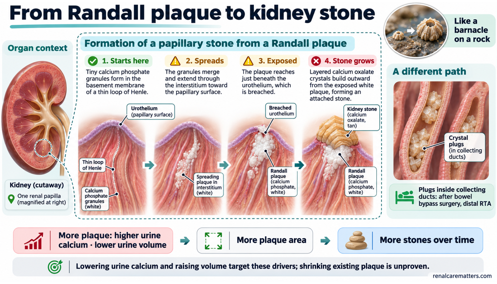
Many idiopathic calcium oxalate stones start on Randall plaque, a calcium phosphate patch that begins around the thin loops of Henle and reaches the tip of the papilla. Higher urine calcium and lower urine volume are associated with more plaque. Intratubular plugs in collecting ducts, seen after bowel bypass and in distal renal tubular acidosis, are a different pathway.
- CaP
- Calcium phosphate (apatite)
- CaOx
- Calcium oxalate
- tLH
- Thin limb of the loop of Henle
- CD
- Collecting duct
- dRTA
- Distal renal tubular acidosis
How thiazides work. Thiazides block the sodium–chloride cotransporter in the distal convoluted tubule. Lower intracellular sodium and chloride hyperpolarize the cell and enhance basolateral sodium–calcium exchange, increasing TRPV5-mediated distal reabsorption; mild extracellular volume contraction also increases proximal sodium and calcium reabsorption, which is why high dietary sodium blunts the effect. Hypokalemia lowers urinary citrate, so potassium status matters for stone prevention.
Hypocalcemia: confirm, measure PTH, then classify
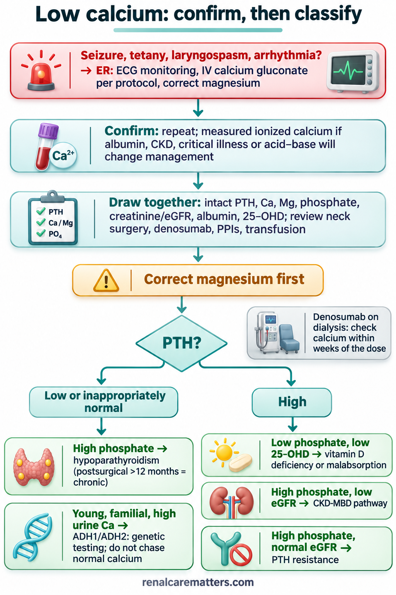
One-screen version of the workup above: triage symptoms first, confirm with measured ionized calcium when it will change management, correct magnesium, then classify by PTH and phosphate.
- ECG
- Electrocardiogram
- PTH
- Parathyroid hormone
- 25-OHD
- 25-Hydroxyvitamin D
- PPI
- Proton pump inhibitor
- ADH1/ADH2
- Autosomal dominant hypocalcemia types 1 and 2
- CKD-MBD
- Chronic kidney disease–mineral and bone disorder
- eGFR
- Estimated glomerular filtration rate
Total, "corrected" and ionized calcium
Albumin adjustment rests on a fixed binding assumption that fails exactly where clinicians most rely on it. In a population study of 22,658 adults with simultaneous total and ionized calcium in Alberta, Canada, unadjusted total calcium classified calcium status in agreement with ionized calcium 74.5% of the time, compared with 63.0% for the original Payne formula and 58.7% for the simplified Payne formula, and misclassification worsened when albumin was below 30 g/L (cross-sectional; Desgagnés et al., 2025). A 2026 joint position statement from the International Osteoporosis Foundation (IOF), the International Federation of Clinical Chemistry and Laboratory Medicine (IFCC) and the European Federation of Clinical Chemistry and Laboratory Medicine (EFLM) recommends that laboratories stop reporting albumin-adjusted calcium (expert position). This guide therefore deliberately offers no corrected-calcium decision tool: use measured ionized calcium when accuracy matters, and unadjusted total calcium against the local range otherwise. Note that key trials and guidelines, including ESE 2025 and PaTHway, still define targets in albumin-adjusted calcium, so translate with caution.
| Pattern | Likely mechanism | Next step |
|---|---|---|
| Low calcium, low or inappropriately normal PTH, high phosphate | HypoPT (postsurgical, autoimmune, infiltrative, genetic) or severe hypomagnesemia | Repeat after magnesium repletion; review surgery and family history; urine calcium on treatment |
| Low calcium, low PTH, high urine calcium, young or familial | ADH1 (CASR gain of function) or ADH2 (GNA11) | Genetic testing; avoid chasing normocalcemia with calcium and calcitriol |
| Low calcium, high PTH, low phosphate, low 25-OHD | Vitamin D deficiency or malabsorption (secondary hyperparathyroidism) | Replete nutritional vitamin D and calcium; investigate malabsorption |
| Low calcium, high PTH, high phosphate, reduced eGFR | CKD–mineral and bone disorder (CKD-MBD) | CKD-MBD pathway; avoid calcium loading; dialysis-specific targets |
| Low calcium, high PTH, high phosphate, normal eGFR | PTH resistance (pseudohypoparathyroidism) | Endocrine referral; genetic testing |
| Abrupt fall after denosumab in advanced CKD or dialysis | Suppressed bone resorption with limited renal reserve | Measure calcium within days to weeks of the dose; calcium and active vitamin D per protocol |
Denosumab on dialysis. In a United States Medicare cohort of women aged 65 years or older receiving dialysis, the 12-week weighted cumulative incidence of severe hypocalcemia was 41.1% after denosumab versus 2.0% after oral bisphosphonates (weighted risk difference 39.1%; observational, Bird et al., 2024). The size of the difference makes residual confounding an unlikely full explanation; the clinical implication is careful patient selection, pre-dose calcium and vitamin D optimization, and planned early calcium monitoring.
Chronic hypoparathyroidism: keep the blood low-normal and the urine normal
The 2025 revised ESE guideline (Bollerslev et al.) and the 2025 international best-practice recommendations (Khan et al.) share a strategy: treat the cause, correct magnesium and nutritional vitamin D deficiency, and use activated vitamin D plus adequate dietary calcium with elemental calcium supplements as needed. The ESE recommends treating when albumin-adjusted calcium is below 2.0 mmol/L (8.0 mg/dL) or ionized calcium below 1.00 mmol/L, suggests aiming for serum calcium in the lower part of, or slightly below, the reference range, phosphate and magnesium within range, and normal 24-hour urinary calcium excretion.
| Item | ESE 2025 position | Strength / note |
|---|---|---|
| Serum calcium target | Lower part of, or slightly below, the reference range, with symptom relief | Recommendation |
| Hypercalciuria (reason to act and to consider PTH replacement) | >6.25 mmol/24 h (250 mg) in women; >7.5 mmol/24 h (300 mg) in men; or >0.1 mmol/kg/24 h (4 mg/kg) | Thresholds are "above"; a value equal to the threshold is at the boundary, not above it |
| Responses to hypercalciuria | Reduce calcium and/or activated vitamin D doses, restrict sodium, consider a thiazide | Thiazide: weak suggestion, very low certainty (⊕◯◯◯) |
| Monitoring on stable therapy | Calcium, phosphate, magnesium, creatinine/eGFR about every 3–6 months; 24-hour urinary calcium about every 1–2 years on conventional therapy | Closer after changes or abnormal results |
| After a dose change | Biochemical monitoring every 1–2 weeks | Sooner if clinically unstable |
| Renal imaging | Not routine; ultrasound or computed tomography (CT) for features suggesting nephrolithiasis, nephrocalcinosis or unexplained decline in kidney function | Recommendation against routine imaging (a change from older guidance) |
| PTH replacement | Recommended when signs or symptoms persist despite optimized treatment; consider for calcium fluctuations, impaired quality of life, eGFR <60 mL/min/1.73 m², hypercalciuria or hyperphosphatemia | No Philippine registration of palopegteriparatide was found as of November 2026 (not listed in the site Drug Index) |
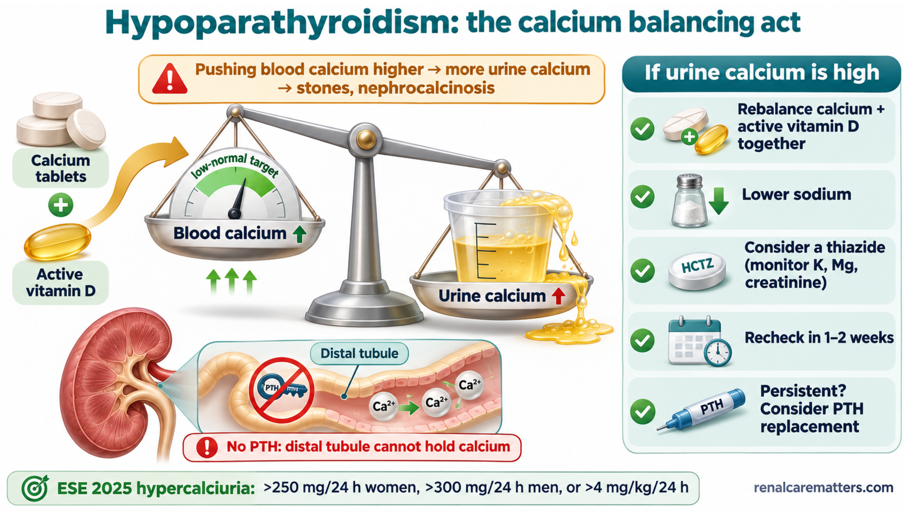
Without PTH, the distal tubule cannot hold calcium, so pushing serum calcium higher with tablets and active vitamin D sends more calcium into the urine. Aim for low-normal serum calcium and normal urinary calcium; respond to hypercalciuria by rebalancing doses, lowering sodium, considering a thiazide and rechecking in 1–2 weeks.
- PTH
- Parathyroid hormone
- ESE
- European Society of Endocrinology
- HCTZ
- Hydrochlorothiazide
- K
- Potassium
- Mg
- Magnesium
Elemental calcium bookkeeping. Most dose errors are unit errors. Calcium carbonate is about 40% elemental calcium and calcium citrate about 21%, so 1,250 mg of calcium carbonate supplies about 500 mg of elemental calcium; never apply the factor to a label that already states elemental calcium. Record activated vitamin D in micrograms as a separate line. The Elemental Calcium Ledger in the site's Mineral Metabolism Workbench totals products from label values.
PTH replacement evidence. In the double-blind 26-week phase of PaTHway (n = 84, randomized 3:1), 79% receiving palopegteriparatide versus 5% receiving placebo met a composite of normal albumin-adjusted calcium, independence from conventional therapy and stable dosing (Khan et al., 2023). In the open-label extension, mean 24-hour urinary calcium fell from 376 to 195 mg/day by week 52 (Clarke et al., 2025), and a post hoc analysis at week 104 reported a mean creatinine-based eGFR increase of 9.0 mL/min/1.73 m² from baseline among the 76 of 82 participants who remained (Rejnmark et al., 2026). These are biochemical and surrogate findings from a randomized phase followed by an uncontrolled extension; they suggest, but do not establish, protection against stones, CKD progression or kidney failure. Calcilytics such as encaleret, which target the overactive CaSR in ADH1, remain investigational.
Do not answer high urine calcium with more calcium
In treated HypoPT with hypercalciuria, review calcium and activated vitamin D doses together, lower sodium, consider a thiazide with monitoring of blood pressure, potassium, magnesium and creatinine, and recheck within 1–2 weeks. The same applies even more strongly to suspected ADH1.
Stone-risk evaluation and the 24-hour urine
Basic evaluation (every stone former). Prior events and procedures, medications and supplements, diet and fluid habits, family history, gastrointestinal and bariatric history, urinalysis (and culture if infection is suspected), serum creatinine, calcium, bicarbonate, potassium and uric acid, a review of imaging burden, and stone analysis by infrared spectroscopy or X-ray diffraction whenever a stone is available. Measure PTH when serum calcium is elevated or repeatedly high-normal.
Comprehensive evaluation is indicated for recurrent, bilateral or multiple stones, nephrocalcinosis, early onset, a solitary kidney, CKD, high-risk composition (uric acid, cystine, infection, brushite) and for interested first-time stone formers (AUA 2026; EAU). The AUA accepts one or more 24-hour collections; the EAU asks for two consecutive collections and recommends waiting at least 20 days, preferably about three months, after an acute episode or intervention, on the usual diet. Prefer two collections in complex cases, because day-to-day variation is large and a single incomplete collection can mislabel a patient.
Urinary calcium thresholds depend on context
Urinary calcium is a continuous risk marker, not a binary disease. Each published cutoff belongs to a population and a purpose, so this guide and its calculator always show the source with the threshold and never generalize a cutoff outside its context.
| Context | Threshold | Source and use |
|---|---|---|
| Adult chronic HypoPT | >250 mg (6.25 mmol)/24 h women; >300 mg (7.5 mmol)/24 h men; or >4 mg (0.1 mmol)/kg/24 h | ESE 2025 R.3.5.2: hypercalciuria prompting dose review and consideration of PTH replacement |
| Adult recurrent calcium stones | ≥200 mg/24 h women; ≥250 mg/24 h men (examples of increased risk) | AUA 2026 discussion of Statement 18; the panel notes no established threshold |
| Calcium phosphate stone prevention | >8 mmol/24 h | EAU: prescribe a thiazide for hypercalciuria above this level (strong) |
| Children | Spot calcium-to-creatinine ratio with age-specific references | Pediatric nephrology; adult 24-hour cutoffs do not apply |
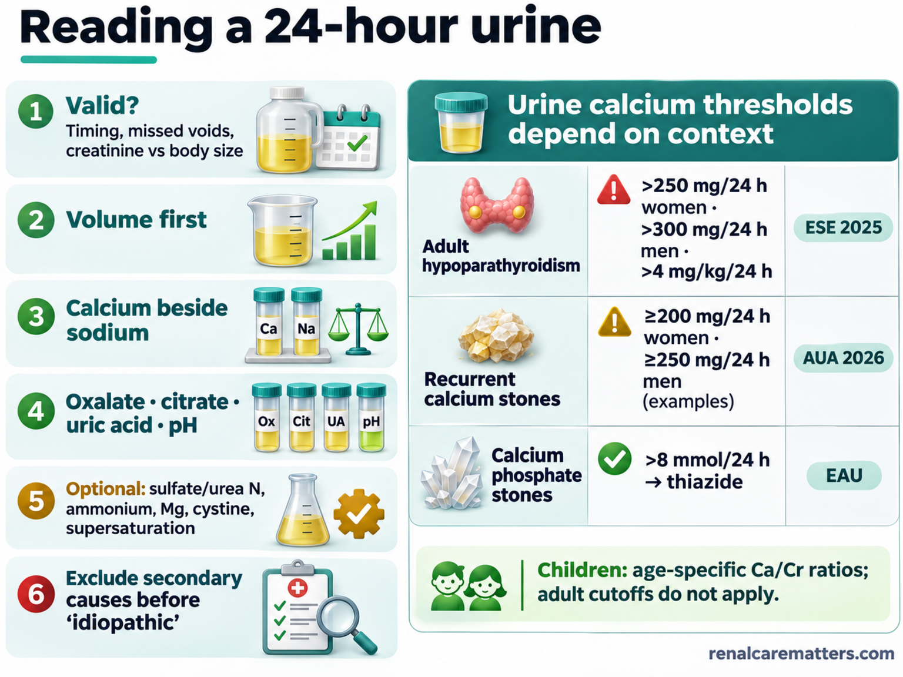
A bedside card for a 24-hour urine: check validity first, then volume, calcium beside sodium, and the remaining analytes, and apply only the urinary calcium threshold that belongs to the clinical context.
- ESE
- European Society of Endocrinology
- AUA
- American Urological Association
- EAU
- European Association of Urology
- Ca/Cr
- Calcium-to-creatinine ratio
- Mg
- Magnesium
- UA
- Uric acid
Arithmetic used by the calculator: elemental calcium 40.078 mg/mmol; sodium 22.98977 mg/mmol; mg/24 h = mg/L × 24-hour volume (L) only for a confirmed complete collection; sodium chloride equivalent (g) = sodium (mmol) × 0.05844, labeled as a chemical equivalent. Timed or incomplete collections are not extrapolated.
Nephrocalcinosis: the image is a clue, the cause is the target
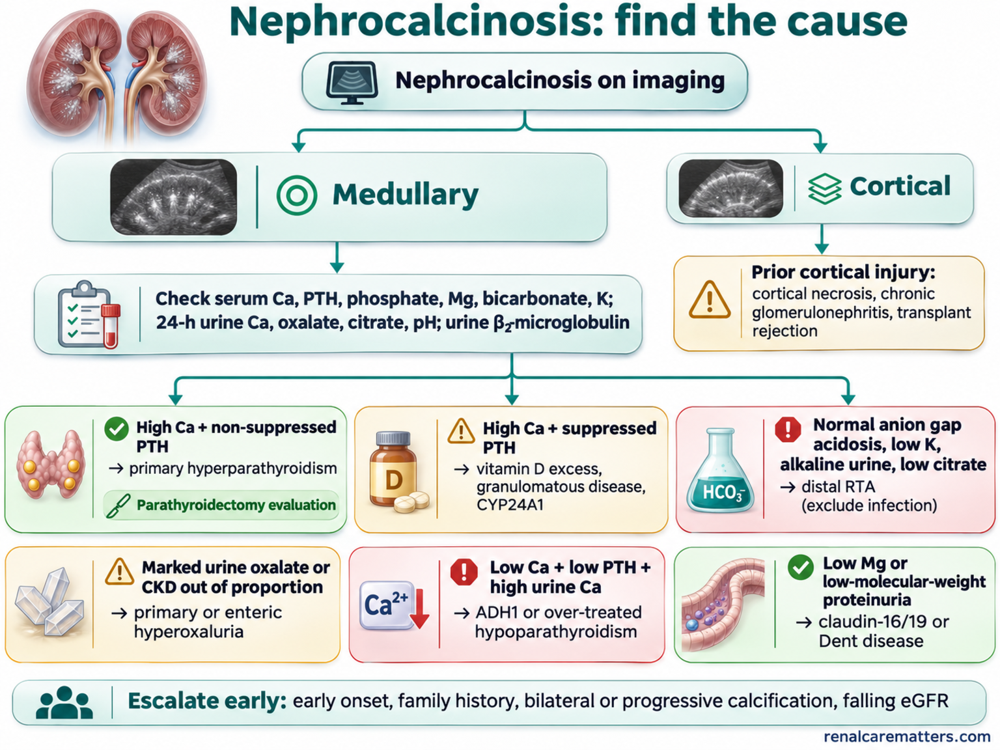
The scan tells you where calcium has settled; the blood and urine tell you why. Medullary nephrocalcinosis usually reflects a metabolic cause that can be treated, whereas cortical calcification usually reflects prior cortical injury.
- PTH
- Parathyroid hormone
- dRTA
- Distal renal tubular acidosis
- PHPT
- Primary hyperparathyroidism
- ADH1
- Autosomal dominant hypocalcemia type 1
- MSK
- Medullary sponge kidney
Ask radiology to describe medullary versus cortical distribution, laterality, burden and coexisting stones or hydronephrosis, and compare with earlier studies. Ultrasound is sensitive for medullary nephrocalcinosis and spares radiation for follow-up; reserve CT for diagnostic uncertainty or a specific management decision. In a Brazilian cohort of 96 outpatients with nephrocalcinosis, dRTA was the leading cause in both children (43.3%) and adults (22.7%), other tubulopathies predominated in children, and primary hyperparathyroidism accounted for 19.7% of adults; adults more often had coexisting stones (73%), and genetic suspicion had been raised in 96.7% of children and 57.6% of adults although testing access was limited (retrospective; Ayoub et al., 2026).
| Phenotype | Suggests | Confirm and treat |
|---|---|---|
| High serum calcium, non-suppressed PTH | Primary hyperparathyroidism | Refer for parathyroidectomy evaluation; stones or nephrocalcinosis are a surgical indication in the Fifth International Workshop guideline |
| High serum calcium, suppressed PTH | Vitamin D excess, granulomatous disease, CYP24A1 deficiency, malignancy | 25-OHD, 1,25-dihydroxyvitamin D, PTH-related peptide; stop vitamin D sources; treat the cause |
| Low bicarbonate, normal anion gap, low potassium, persistently alkaline urine, low citrate | dRTA | Exclude urease-producing infection and confounders; EAU suspicion pattern: fasting second-morning urine pH >5.8 and 24-hour pH >6.2; specialist testing for incomplete dRTA; alkali to correct acidosis and potassium |
| Marked urinary oxalate, early onset, CKD out of proportion | Primary hyperoxaluria (AGXT, GRHPR, HOGA1) or enteric hyperoxaluria | Plasma oxalate in advanced CKD (urine underestimates burden); genetic testing; early specialist referral |
| Low calcium, low PTH, high urine calcium | ADH1 or over-treated HypoPT | Review calcium and calcitriol exposure; genetic testing |
| Hypomagnesemia, hypercalciuria | Claudin-16 or claudin-19 disease (familial hypomagnesemia with hypercalciuria and nephrocalcinosis) | Genetics; magnesium; monitor eGFR |
| Low-molecular-weight proteinuria, hypercalciuria, rickets | Dent disease (CLCN5, OCRL), phosphate-wasting disorders (e.g., SLC34A3) | Urine β2-microglobulin or retinol-binding protein; genetics |
| Medications | Loop diuretics (especially in preterm infants), topiramate, acetazolamide, excess calcium or vitamin D | Review indication and alternatives with the prescriber |
Escalate for early-onset or familial disease, bilateral or progressive calcification, CKD out of proportion to the imaging, marked oxalate, rickets, hypomagnesemia or low-molecular-weight proteinuria. A 2025 review recommends genetic testing when clues point to an inherited condition, such as consanguinity, childhood stones, multiple affected relatives, repeated episodes or kidney failure with nephrocalcinosis (Baum et al., 2025). Biobank data suggest that activating CASR variants are underdiagnosed: fewer than half of carriers with ADH1-associated variants had a relevant diagnosis code (Chang et al., 2025).
The acute stone: analgesia, imaging, expulsion and drainage
Imaging. In adults, low-dose noncontrast CT is the reference test when definitive imaging is needed; the EAU supports ultrasound first with CT to confirm. Use ultrasound first in pregnancy and in children. Record side, location, diameter, obstruction and parenchymal calcification as separate findings.
Analgesia. A nonsteroidal anti-inflammatory drug (NSAID) is first line when safe; weigh kidney function, volume status, bleeding risk, pregnancy and other contraindications, and use alternatives when indicated. Forced intravenous or oral fluid loading does not speed passage.
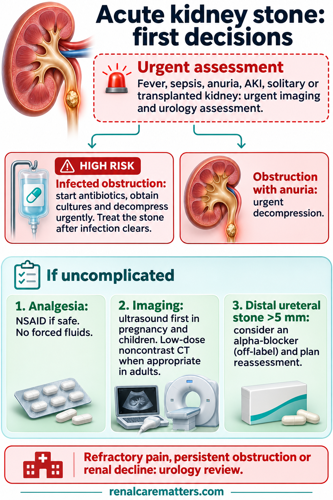
Red flags come first: fever, sepsis, anuria, AKI or a solitary or transplanted kidney mean cultures, antibiotics and urgent decompression. Otherwise give analgesia, image appropriately, and reserve medical expulsive therapy mainly for uncomplicated distal stones larger than 5 mm.
- AKI
- Acute kidney injury
- NSAID
- Nonsteroidal anti-inflammatory drug
- CT
- Computed tomography
- MET
- Medical expulsive therapy
- SWL
- Shock-wave lithotripsy
- PCNL
- Percutaneous nephrolithotomy
Medical expulsive therapy (MET), honest effect sizes. In a 2018 Cochrane review (67 trials, 10,509 participants), higher-quality placebo-controlled trials suggested a modest benefit of alpha-blockers on stone clearance (risk ratio 1.16, 95% confidence interval [CI] 1.07–1.25; about 116 more clearances per 1,000; moderate certainty) with a small increase in major adverse events (about 29 more per 1,000). The effect depended on size: risk ratio 1.06 (0.98–1.15) for stones 5 mm or smaller versus 1.45 (1.22–1.72) for stones larger than 5 mm (Campschroer et al., 2018). The STONE trial of tamsulosin in emergency department patients with stones under 9 mm (mean 3.8 mm) found passage in 50% versus 47% with placebo (relative risk 1.05, 0.87–1.27; Meltzer et al., 2018). Offer MET as an off-label option for selected uncomplicated distal ureteral stones larger than 5 mm, with a planned reassessment, and do not expect benefit for small stones that usually pass anyway.
When to intervene. Escalate for infection, persistent obstruction, refractory pain, AKI or a solitary kidney. Choose among observation, shock-wave lithotripsy, ureteroscopy and percutaneous nephrolithotomy (PCNL) by location, size, anatomy, infection status and preference; PCNL is generally first line for renal stone burden larger than 20 mm (EAU 2026). Confirm passage or clearance when it matters.
Recurrence prevention: diet, volume, then targeted drugs

Prevention starts with measures that change urine chemistry for everyone, then adds a medicine matched to the abnormality on the 24-hour urine, followed by a repeat collection to confirm the effect.
- dRTA
- Distal renal tubular acidosis
- 24-h
- 24-hour urine collection
- Na
- Sodium
- Ca
- Calcium
General measures. Aim for a urine output of about 2.5 L/day in eligible adults (EAU: 24-hour urine volume above 2.5 L, strong; the AUA 2026 guideline encourages adults with calcium stones to drink about 2.5 L of water daily), individualized for heart failure, advanced CKD or dialysis, and hyponatremia risk. Keep dietary calcium at about 1,000–1,200 mg/day with meals, restrict sodium (AUA discussion: limited sodium; EAU: sodium chloride not exceeding 4–5 g/day), moderate animal protein, limit soft drinks, avoid high-dose supplemental vitamin C, and target concentrated oxalate sources only when urinary oxalate is high. In enteric hyperoxaluria, calcium with meals and individualized fat and oxalate management are central.
Why calcium is not restricted. In the Borghi trial, 120 men with recurrent calcium oxalate stones and idiopathic hypercalciuria were randomized to normal calcium (30 mmol/day) with reduced animal protein and salt, or to a traditional low-calcium diet (10 mmol/day). Five-year recurrence was 12 of 60 (20%) versus 23 of 60 (38%): relative risk 0.49 (95% CI 0.24–0.98), an absolute reduction of about 18 percentage points, number needed to treat (NNT) about 6 over five years. Urinary calcium fell similarly in both arms, but oxalate rose on the low-calcium diet. Calcium, protein and sodium changed together, so the trial supports the combined strategy rather than any single component.
Fluid: what PUSH did and did not show. The 2026 Prevention of Urinary Stones with Hydration (PUSH) trial randomized 1,658 people aged 12 years or older with low urine volume to a behavioral adherence package (fluid prescription, financial incentives, coaching, reminders) or guideline care. Urine volume rose more with the intervention, yet symptomatic stone events at two years were 18.6% versus 19.8% (hazard ratio 0.96, 95% CI 0.77–1.20), with more urinary storage symptoms and more asymptomatic hyponatremia (12 versus 2 participants). The trial tested an adherence program, not hydration physiology; it argues for measuring output and against promising that a coaching tool will reduce recurrence.
Thiazides: shared decision. The AUA 2026 guideline states that clinicians should offer a thiazide or thiazide-like diuretic to adults with recurrent calcium-based stones and high or relatively high urinary calcium (Statement 18; moderate recommendation, evidence grade C), with limited sodium and normal calcium intake. The Caring for Australians and New Zealanders with Kidney Impairment (CARI) 2026 guideline places nutrition therapy first and allows potassium citrate or thiazides when nutrition therapy alone is insufficient. NOSTONE (n = 416, median 2.9 years) found recurrence of 59% with placebo and 59%, 56% and 49% with hydrochlorothiazide 12.5, 25 and 50 mg once daily (rate ratio for 50 mg 0.92, 95% CI 0.63–1.36), with no dose–response relation and more hypokalemia, gout, new-onset diabetes, skin allergy and creatinine rises. Explanations offered include high urinary sodium, modest baseline hypercalciuria, once-daily dosing of a short-acting agent and intensive counseling in all arms. Longer-acting chlorthalidone or indapamide may be preferable (in the Philippines, indapamide is the available single agent); avoid triamterene, which forms stones; check potassium, sodium, magnesium, uric acid, glucose, creatinine and blood pressure at baseline and early follow-up.
Alkali and allopurinol. The AUA 2026 guideline states that alkali therapy may be recommended for adults with recurrent calcium oxalate stones, that alkali and/or thiazides may be offered when no metabolic abnormality is found, and that allopurinol may be offered for recurrent calcium oxalate stones with high or relatively high urinary uric acid (conditional-level statements). Potassium citrate requires attention to potassium, eGFR and concurrent drugs; in calcium phosphate stone formers, follow urine pH and laboratory supersaturation, because alkalinization can raise calcium phosphate risk. In dRTA, systemic acidosis is corrected under specialist guidance.
| Composition | Core approach | Note |
|---|---|---|
| Uric acid | Urine alkalinization with citrate; address low urine volume and metabolic syndrome | Dissolution uses a higher clinician-directed pH target (EAU: 7.0–7.2) with imaging follow-up and calcium phosphate caution |
| Struvite (infection) | Complete urologic clearance and culture-directed antibiotics | Acetohydroxamic acid may be offered when stones cannot be removed (AUA 2026) |
| Cystine | Urine volume above 3 L/day, sodium restriction, alkalinization (EAU: pH >7.5); thiol drugs when indicated | Specialist-directed |
| Primary hyperoxaluria | Early specialty referral; genotype-specific therapy | In ILLUMINATE-A, lumasiran lowered 24-hour urinary oxalate by 53.5 percentage points more than placebo; 84% reached ≤1.5 times the upper limit of normal (surrogate endpoint) |
Emerging: sodium–glucose cotransporter 2 (SGLT2) inhibitors. In a two-week crossover phase 2 trial in 53 adults without diabetes, empagliflozin reduced the relative supersaturation ratio for calcium phosphate by 36% in calcium stone formers and for uric acid by 30% in uric acid stone formers (surrogate endpoints; Anderegg et al., 2025). In a Korean target-trial emulation of type 2 diabetes, SGLT2 inhibitor initiation was associated with fewer stone events than dipeptidyl peptidase 4 (DPP4) inhibitors (hazard ratio 0.54; 0.64 among prior stone formers; observational, Shin et al., 2025). This is hypothesis-strengthening, not an indication: no outcome trial has tested SGLT2 inhibitors for stone prevention, but in patients who already qualify for one, the possible stone benefit is a reasonable tiebreaker.
What the key trials mean in absolute terms
Relative effects overstate what a patient gains, so each result is restated per 100 or per 1,000 people. Badges mark randomized controlled trials (RCT) and observational studies.
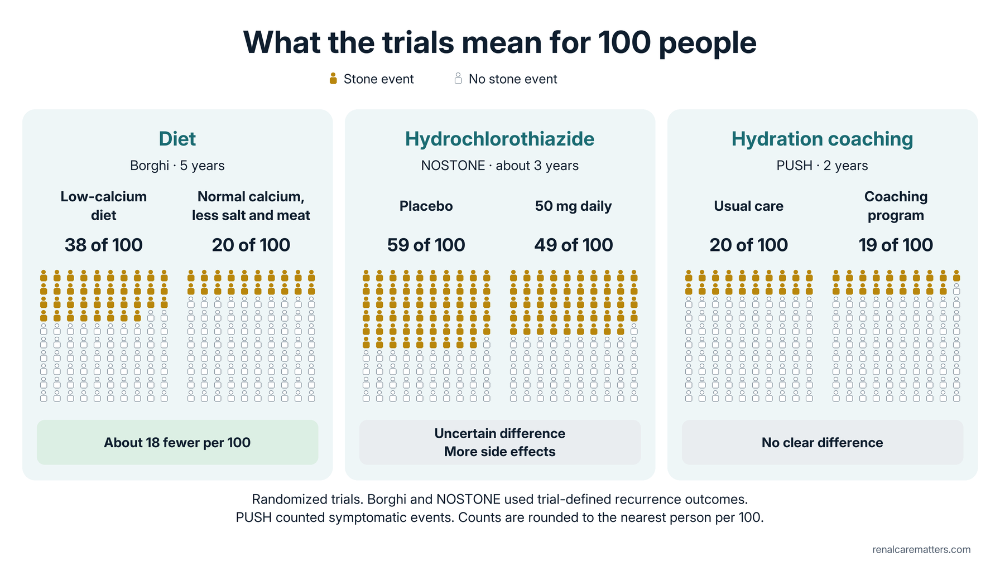
The three prevention trials as 100 people each: diet changed outcomes (38 versus 20 per 100 over five years), while hydrochlorothiazide (59 versus 49) and a hydration coaching program (20 versus 19) showed no clear difference. Useful for shared decisions in clinic.
- NOSTONE
- Randomized trial of hydrochlorothiazide doses for stone recurrence
- PUSH
- Prevention of Urinary Stones with Hydration trial
| Trial (design) | Population | Outcome | Absolute result | Certainty language |
|---|---|---|---|---|
| Borghi 2002 RCT | 120 men, recurrent calcium oxalate stones, hypercalciuria | 5-year recurrence | 20% vs 38%; about 18 fewer per 100; NNT about 6 | Normal-calcium, low-salt, low-animal-protein diet reduces recurrence versus low calcium in this phenotype |
| NOSTONE 2023 RCT | 416 adults, recurrent calcium stones | Symptomatic or radiologic recurrence, median 2.9 years | 59% placebo vs 49% with 50 mg; not significant | Benefit of hydrochlorothiazide on events is uncertain; harms are real |
| PUSH 2026 RCT | 1,658 people aged ≥12 with low urine volume | Symptomatic events at 2 years | 18.6% vs 19.8%; no difference | A behavioral adherence package did not reduce events |
| Cochrane MET 2018 RCT | Ureteral stones ≤10 mm | Stone clearance | About 116 more per 1,000 (placebo-controlled trials); larger for stones >5 mm | Alpha-blockers likely increase clearance, mainly for stones >5 mm |
| STONE 2018 RCT | Emergency patients, stones <9 mm (mean 3.8 mm) | Passage by day 28 | 50% vs 47%; not significant | No benefit for small stones |
| Bird 2024 Observational | Women ≥65 on dialysis | Severe hypocalcemia within 12 weeks | 41.1% denosumab vs 2.0% oral bisphosphonate | Denosumab is associated with a large excess risk |
Reassessment schedule
| Situation | When to recheck | Source |
|---|---|---|
| After starting dietary or drug prevention | 24-hour urine 8–12 weeks after starting drug prevention (EAU); the AUA advises repeat testing after treatment starts (its 2014 edition specified within about 6 months); then about yearly once stable | AUA 2026; EAU |
| Persistent high-risk stone disease | Urine about annually; imaging cadence by burden, residual fragments, symptoms and modality (ultrasound preferred for surveillance) | AUA 2026; EAU |
| Chronic HypoPT, after a dose change | Calcium, phosphate, magnesium, creatinine every 1–2 weeks until stable | ESE 2025 |
| Chronic HypoPT, stable | Blood every 3–6 months; 24-hour urinary calcium every 1–2 years (closer if abnormal) | ESE 2025 |
| Thiazide started | Potassium, sodium, magnesium, uric acid, glucose, creatinine and blood pressure at baseline and early follow-up | AUA 2026; NOSTONE harms |
| Nephrocalcinosis | eGFR, the driving biochemical abnormality, and imaging agreed with nephrology or urology by cause and trajectory | Expert practice |
Three worked cases
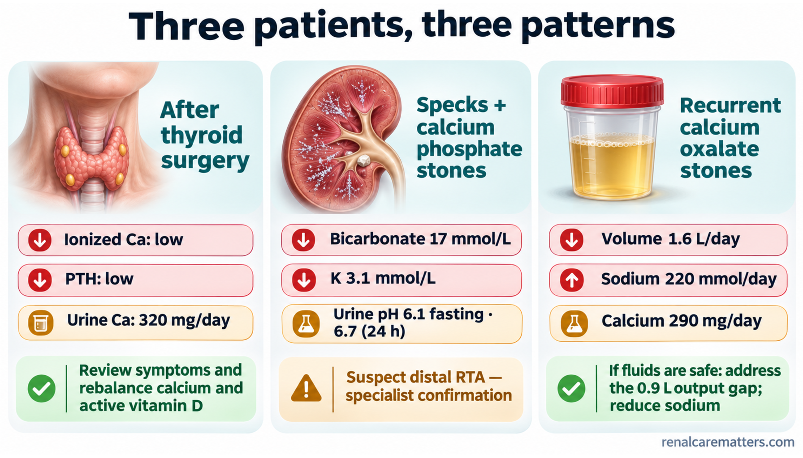
The three cases at a glance, each with its key laboratory values and the teaching point worked through below.
- Ca
- Calcium
- PTH
- Parathyroid hormone
- K
- Potassium
- RTA
- Renal tubular acidosis
Case 1: low blood calcium, high urine calcium after thyroid surgery
A 42-year-old woman had a total thyroidectomy 18 months ago. She takes calcium carbonate 1,250 mg three times daily and calcitriol 0.5 µg twice daily. Measured ionized calcium is mildly low, intact PTH is low, and two complete 24-hour collections show urinary calcium of 320 mg/day. Screen for symptoms and red flags; none. Chronicity: more than 12 months, so chronic postsurgical HypoPT by the ESE definition. Check magnesium and phosphate. Inventory: 1,250 mg carbonate × 0.40 = 500 mg elemental per dose, 1,500 mg/day from pills plus diet. Interpret: 320 mg/day exceeds the ESE female threshold of 250 mg. The plan is not more calcium: confirm symptom control at a low-normal target, reduce sodium, rebalance calcium and calcitriol together, consider a thiazide with monitoring, recheck within 1–2 weeks, image if features suggest stones or nephrocalcinosis, and discuss endocrine referral for PTH replacement if hypercalciuria persists. The calculator must not prompt a calcium increase.
Case 2: medullary nephrocalcinosis and recurrent calcium phosphate stones
A 29-year-old woman has bilateral medullary nephrocalcinosis and two calcium phosphate (brushite and apatite) stones. Serum bicarbonate is 17 mmol/L with a normal anion gap, potassium 3.1 mmol/L, fasting second-morning urine pH 6.1 and 24-hour urine pH 6.7; urine culture is negative. Both pH values exceed the EAU suspicion pattern (fasting >5.8 and 24-hour >6.2), so the rule engine returns a suspicion prompt for dRTA, not a diagnosis. Next: exclude urease-producing infection and diuretic or laxative effects, review topiramate and autoimmune disease (Sjögren syndrome), measure urinary citrate and calcium, and refer for specialist confirmation. Treatment is specialist-guided alkali to correct acidosis and potassium, with monitoring of bicarbonate, potassium, urinary citrate, urine pH and calcium phosphate supersaturation, because over-alkalinization can promote calcium phosphate precipitation.
Case 3: recurrent calcium oxalate stones and low urine output
A 48-year-old man has had three calcium oxalate stones. His 24-hour urine shows volume 1.6 L, sodium 220 mmol and calcium 290 mg. Collection quality: creatinine plausible for his weight. Output gap: 2.5 − 1.6 = 0.9 L of urine per day, provided he has no fluid restriction. Sodium: 220 mmol is about 5,058 mg sodium, or about 12.9 g sodium chloride equivalent; patis, toyo, instant noodles and processed meats are the likely sources. Keep meal calcium normal. His calcium meets the AUA example threshold for men (≥250 mg/day), so after diet changes and a repeat collection, a thiazide or thiazide-like agent becomes a shared decision. Variation: if he presents with fever and flank pain from an obstructing stone, the emergency banner takes precedence and the calculator suppresses all prevention output until infection and obstruction are managed.
Philippine practice notes
- Hot climate, outdoor work. Heat and sweat losses lower urine output; counsel by measured output rather than glasses of water, and adjust for heart failure, CKD and dialysis.
- Sodium sources. Patis, toyo, bagoong, instant noodles, canned meats and seasoning mixes; use serving-specific labels and the site's sodium tools.
- Access. Ionized calcium, 24-hour urine stone panels, stone analysis by infrared spectroscopy, plasma oxalate and genetic panels may be send-out tests; confirm what your laboratory offers and its sample handling before ordering. Use two collections when you can afford only a decision once.
- Medicines (checked November 2026). Locally available: potassium citrate (1,080 mg and 1,620 mg extended-release tablets, both in the Philippine National Formulary), indapamide, hydrochlorothiazide, calcitriol, allopurinol and tamsulosin. Single-agent chlorthalidone is not listed in the Drug Index (only fixed-dose combinations), so indapamide is the practical long-acting thiazide-like choice. No Philippine registration of palopegteriparatide was found.
- Supplements. Ask about vitamin D, calcium and vitamin C products bought online or from relatives abroad, a common source of unrecognized calcium and oxalate load.
Pearls and pitfalls
- A low total calcium with low albumin is often normal ionized calcium; a normal total calcium in alkalosis can hide low ionized calcium.
- Chasing normocalcemia in HypoPT trades symptoms for hypercalciuria; aim low-normal.
- Two 24-hour collections that disagree are information, not noise; do not average them away.
- An incomplete collection underestimates everything; check creatinine before reading calcium.
- High sodium excretion blunts the calcium-lowering effect of a thiazide; address sodium first.
- Calcium phosphate stones plus persistently alkaline urine: think dRTA before prescribing more citrate.
- Randall plaque links specks and stones: idiopathic calcium oxalate stones grow on papillary plaque, while bypass-related and dRTA stones arise from intratubular plugs.
- In advanced CKD, urinary oxalate can look reassuring while plasma oxalate is high.
- A drug that improves supersaturation or urine calcium has shown a surrogate benefit; event reduction needs outcome trials.
Evidence cards
Evidence checked 21 November 2026. Badges distinguish randomized clinical outcomes, observational associations, and mechanistic or surrogate findings; guideline statements are quoted with their own grading vocabulary.
Borghi et al., 2002 RCT
- Design
- Randomized, 5 years, n = 120 men
- Result
- Recurrence 20% vs 38%; RR 0.49 (0.24–0.98)
- Use
- Normal calcium with less salt and animal protein; components changed together
NOSTONE, 2023 RCT
- Design
- Double-blind, 4 arms, n = 416, median 2.9 years
- Result
- 59% placebo vs 59%, 56%, 49%; no dose–response
- Use
- Uncertain event benefit; monitor harms
PUSH, 2026 RCT
- Design
- Six centers, n = 1,658, age ≥12, low urine volume
- Result
- Events 18.6% vs 19.8%; HR 0.96 (0.77–1.20)
- Use
- Track output; no recurrence claim for adherence tools
URINE, 2026 RCT
- Design
- Single center, n = 56, empiric vs selective therapy
- Result
- No difference in supersaturation at 8 weeks
- Use
- Surrogate endpoint; urine testing remains for phenotyping
PaTHway, 2023–2026 RCT
- Design
- 26-week double-blind, then open-label extension
- Result
- Composite 79% vs 5%; urine calcium 376 → 195 mg/day; eGFR +9.0 at week 104 (post hoc)
- Use
- Promising biochemistry; hard kidney outcomes unproven
Desgagnés et al., 2025 Observational
- Design
- Cross-sectional, n = 22,658
- Result
- Agreement with ionized calcium: 74.5% total, 63.0% Payne, 58.7% simplified Payne
- Use
- Prefer ionized calcium; no corrected-calcium tool
Cochrane MET, 2018 RCT
- Design
- 67 trials, 10,509 participants
- Result
- RR 1.16 in placebo-controlled trials; 1.45 for stones >5 mm
- Use
- Selected distal stones >5 mm
Empagliflozin crossover, 2025 Mechanistic / surrogate
- Design
- Phase 2, 2-week crossover, n = 53 without diabetes
- Result
- Calcium phosphate supersaturation −36%; uric acid −30%
- Use
- Surrogate only; awaits outcome trials
Randall plaque studies, 2003–2005 Observational
- Design
- Papillary biopsy (Evan) and endoscopic mapping (Kuo, n = 14 vs 4 controls; Kim, n = 13 vs 4)
- Result
- Plaque begins in thin-limb basement membranes; coverage rises with urine calcium, falls with volume, tracks stone number
- Use
- Mechanistic rationale for volume and calcium targets; plaque regression unproven
ROKS recurrence model, 2019 Observational
- Design
- Olmsted County cohort, 3,364 stone formers
- Result
- Recurrence 3.4 → 17.6 per 100 person-years by episode number; C-index 0.681
- Use
- Recurrence of Kidney Stone (ROKS) model as a counseling aid; uncertain calibration in the Philippines
The November 2026 Spanish multidisciplinary consensus also supports serum and 24-hour urine evaluation in high-risk stone disease and treatment matched to composition and metabolic findings (Ramos Cebrián et al., 2026); it is used here as supporting consensus, while thresholds and comparators come from the named primary guidelines.